Wir feiern das Osterfest, aber woher kommt Ostern, warum liegt
es nicht an einem festen Datum wie Weihnachten, und wie begehen es
andere Menschen?
Dass die Wurzel des Osterfestes alt sind, sieht man daran, dass
es eben auf verschiedenen Daten liegt. Unser Kalender richtet sich
nach dem Lauf der Erde um die Sonne – aber früher war der Mond der
wichtigere Zeitmesser am Himmel. Da dieser Lauf aber nicht mit dem der
Sonne übereinstimmt, wechselt hier immer das Datum.
Beispielsweise steht im Markusevangelium (15,6-40), dass der
Todestag Jesu der Haupttag des Pessachfestes war, nach Johannes war es
einen Tag früher. Das jüdische Pessachfest erinnert an die letzte
Nacht der ägyptischen Gefangenschaft und weist darauf hin, dass die
letzte Plage – die Tötung der Erstgeborenen – durch ein Blutmal von
geschlachteten Ziegen an von Juden bewohnten Häusern an deren
Bewohnern vorbeigehen konnte. Pessach bedeutet übersetzt „abprallen“.
Es besteht also keine inhaltliche Verbindung beider Feste,
sondern nur eine zeitliche. Es findet im Frühling statt und beginnt am
Abend des 14. Nisan, dem ersten Frühlingsmonat im jüdischen Kalender.
Das Judentum hängt mit seinen Fest- und Gedenktagen immer noch vom
Lauf des Mondes und dem Mondkalender ab. Diese Verschiebung gegenüber
dem Sonnenkalender blieb im Christentum auch nach allen
Kalenderreformen erhalten.
Bei uns erinnert das Osterfest an die Auferstehung Christi.
Ostern fällt immer auf den ersten Sonntag nach dem ersten
Frühlingsvollmond. Weil z. B. sich Pfingsten nach dem Osterfest
richtet, verschieben sich viele christliche Festtage.
Bei dem Namen Ostern gibt es verschiedene Deutungen. Einerseits
soll es von „Austro“ Morgenröte hergeleitet sein, weil Jesus zu dieser
Zeit auferstanden sein soll. Die Herleitung von einer germanischen
Frühlingsgöttin Ostara ist erfunden, weil sie erstmals im 17.
Jahrhundert auftaucht und in früherer Zeit nicht so belegt ist. In
vielen Sprachen bezieht sich der Name direkt auf das Pessachfest z. B.
im französischen „pâques“. Der Termin des Osterfestes liegt in manchen
Ländern verschieden, beispielsweise im orthodoxen Glaubensraum, weil
hier noch der alte julianischen Kalender gilt.
Viele Bräuche beruhen darauf, dass der Frühling zu dieser Zeit
beginnt und das Leben aus dem Winterschlaf erwacht. Die bekanntesten
Beispiele dafür sind das Osterei und der Osterhase; Ei und Hase sind
schon seit ältester Zeit Symbole der Fruchtbarkeit und passen auch
sehr gut zum christlichen Osterfest, das ja auf der Auferstehung
basiert.
Da an diesem Tag auch die Fastenzeit beendet wird, ist Ostern
auch ein Fest, an dem viel gegessen und getrunken wird. Eier stehen
vielfach im Mittelpunkt, aber es wird allgemein das Fasten bewusst
gebrochen. In manchen Gegenden Österreichs ist am Karsamstag die
Segnung von Speisen z. B. Würsten, Kren oder dem Osterschinken üblich.
Osterfeuer beruhen definitiv auf alten Germanischen
Sonnenfesten, da dadurch das Wiedererscheinen der Stärke der Sonne
angedeutet wird.
Es war schon seltsam für Dudley Dursley, dass Harry nicht immer
da war. Keiner, den man verspotten oder ärgern konnte. Also suchte
sich Dudley in Harrys erstem Schuljahr neue Opfer aus. In Smeltings,
aber auch daheim. Sonst wären die Ferien und die wenigen freien
Wochenenden ja langweilig geworden. Man nannte ihn noch nicht Big D,
aber Kinder in dem Alter geben sich noch nicht solche Spitznamen. Und
schon die wenigen Tage an den Wochenenden, die er in Little Whinging
verbrachte, wurden Dudley und seine Freunde zum Schrecken der kleinen
Kinder in der Siedlung. Jedes Spielzeug wurde zerstört, jede Süßigkeit
weggenommen. Und sowohl Vernon als auch Petunia redeten von
„kindlichem Übermut“ und gaben lieber den wütenden Eltern das Geld für
das Spielzeug oder das Eis. Viele wagten auch nicht mehr, ihren Eltern
etwas zu erzählen, weil Dudley anfing, die jüngeren Kinder und jedes,
das deutlich schwächer schien als er, zu verprügeln. Und die Dursleys
dachten, Dudders wäre vernünftiger geworden und würde andere Dinge
unternehmen, schließlich hatten sie sein Taschengeld extra erhöht,
damit das Wochenende nicht durch fremde Eltern gestört wurde.
Die Kinder hatten Angst vor Dudley und den „großen Jungs“ und
wenn sie nicht mit ihren Eltern darüber redeten, dann aber sehr wohl
in der Schule. Viele kannten zumindest Dudley schon als Schulbully und
waren froh, dass er nicht mehr an ihre Schule ging oder auch, dass er
in der Woche nicht in der Nähe war. Aber in den Weihnachtsferien
trauten sich die, die dieses Fest zu Hause verbrachten, kaum auf die
Straße oder wenn dann in Begleitung größerer Geschwister oder
Erwachsener. Und viele Eltern waren stolz darauf, dass ihre Kinder
endlich kein Spielzeug mehr im Vorgarten herumliegen ließen. Es fiel
ihnen auch kaum auf, dass ihre Kinder gern Freunde in anderen
Siedlungen besuchten aber selbst kaum Besuch bekamen.
Aber die Kinder untereinander redeten darüber und viele waren
froh, als die Weihnachtferien vorbei waren. Man musste doch mal für
die Eltern einkaufen gehen oder wollte zumindest eine Straße weiter
Freunde besuchen. Und so kam es, dass sich Dudley wunderte, wo den
alle hin wären, aber immer noch ein paar Opfer fand. Viele Eltern
erzählten stolz, dass ihre Kinder sich regelrecht auf die Schule
freuten. Dem war aber nur so, weil der kleine Tyrann fort war.
Aber bevor an den freien Ostertagen, die Harry ja in Hogwarts
verbrachte wie die meisten Zauberschüler, Dudley für 3 Tage
zurückkehrte fürchteten besonders die ganz Kleinen, vor denen Dudley
auch kein Halt machte, um ihre geliebte Ostereiersuche und auch die
Älteren machten sich Sorgen darum, auch wenn sie schon wussten, dass
ihre Eltern und nicht der Osterhase die Eier versteckte.
Je näher der Termin rückte, desto unruhiger wurden die Kinder in
der Siedlung und desto mehr erzählten sie darüber. Ostern lag am 19.
April und im März redete man intensiver darüber, wie man Dudley am
besten hindern konnte, die traditionelle Ostereiersuche durch das
Finden oder Zerstören der Eier kaputtzumachen. Hierbei wurden die
Kleinsten natürlich ferngehalten, denn im Gegensatz zu Dudley
kümmerten sich die meisten Kinder sehr wohl umeinander. Und bei diesem
Thema blieben die normalen Animositäten außen vor. Die konnten später
ausgelebt worden.
Mitte März verabredeten sich ein paar Kinder an einem
Wochenende, von dem sie wussten, dass Dudley in Smeltings bleiben
würde zum Spielen auf dem Spielplatz, auf dem ein paar Jahre später
Ereignisse stattfinden würden, die wir alle kennen und an dem Dudley
begann, sich selbst zu erkennen. Schlimmeres und gleichzeitig Besseres
konnte durch Dementoren nicht passieren, aber das lag eben noch in der
Zukunft.
Und die Kinder versammelten sich auch in der kommenden Woche
noch mitten in der Siedlung in einer großen Gruppe mindestens zweimal
in der Woche. Die Eltern der Kinder wunderten sich sehr, warum die
Kinder sich immer in einer großen Gruppe versammelten und nicht wie
sonst meist in ihrer kleinen Clique. Und sie unterhielten sich
scheinbar nur und spielten nicht. Es gab kein plötzliches
Auseinanderlaufen um sich zu verstecken, kein Ball lag dabei und es
wurden keine Mannschaften gewählt. Aber das war kein Gespräch unter
den Eltern, die sich ja vielfach kannten und sei es nur von
gemeinsamen Elternabenden.
Schließlich hatten einige Kinder auch Stifte und Zettel dabei
und die Eltern dachten an Rätselspiele oder Ähnliches. Und Anfang
April hätten sich die Eltern noch mehr gewundert, aber sie bekamen es
nicht mit, weil sich dazu wieder alle auf dem Spielplatz versammelten.
Und es waren wohl so viele Kinder wie noch nie. Sie warfen ihr
Taschengeld zusammen und es wurde eine Liste geschrieben, später eine
zweite. Drei Kinder wurden mit dem Taschengeld aller losgeschickt und
rasten in die nahegelegenen Geschäfte. Währenddessen wurde eine große
unter einem Pullover versteckte Flasche hervorgeholt und sorgsam
beiseite gestellt. Dann setzte man sich, schaukelte, rutschte und
einige spielten halbherzig Verstecken oder Fangen. Man merkte aber,
dass alle nur auf etwas warteten und halbherzig dabei waren.
Schließlich kamen die drei Kinder beladen mit großen Tragetüten
zurück. Sie packten viele Schokoladenostereier aus und eine Palette
mit richtigen Eiern. Dazu gab es Eierfarben. Und dann wurde es
seltsam. Niemand rührte die Schokoeier an. Es wurde die Flasche geholt
und vorsichtig auf dem Boden aufgeschraubt. Und noch viel mehr Dinge
geschahen, die man bei Kindern nicht so erwartete. Aber schließlich
wurde all das wieder eingepackt und die Kinder gingen ihrer Wege.
Schließlich kam Ostern, es war schon angenehm warm und trocken.
Und Dudley Dursley kam aus Smeltings, freute sich auf viel Schokolade,
aufs Verhauen und andere Ärgern. Viele Kinderaugen verfolgten diesmal
mehr erwartungsvoll als ängstlich die Ankunft, als Vernon ihn mit dem
Auto vom Bahnhof abholte.
Richtig los mit den seltsamen Ereignissen ging es aber erst am
nächsten Morgen, dem Ostersamstag. Das war der Tag, an dem
traditionellerweise die Eier in jeglicher Form versteckt wurden. Das
geschah meistens nachmittags. Aber eine Gruppe Kinder beobachtete
sogar mit einem Fernglas bewehrt das Haus der Dursleys. Und als Onkel
Vernon mit Petunia ins Auto stieg um einkaufen zu fahren, ging alles
schnell. Jemand hatte sich hinters Haus der Dursleys geschlichen und
beobachtete, was Dudley machte. Der saß wie immer noch beim Essen und
würde erst dann das Haus verlassen. Das Mädchen, das Dudley
beobachtete gab ein Zeichen zu jemandem, der in einem Baum hockte und
der wiederum rief nach unten nur „Los“. Und mindestens zehn Kinder
eilten mit kleinen Schüsseln bewaffnet los und verteilten direkt vor
dem Zaun der Dursleys, wo aber noch der Rasen wuchs, reichlich
Schokoeier. Man konnte sie gar nicht übersehen. An der Ecke vom
Glyzinienweg, an dem Dudley meist vorbeikam um seine Runde zu drehen
und seine Freunde zu treffen und an der sich ein kleiner grüner
Rasenplatz befand wurden zwanzig bunt bemalte Eier vorsichtig so
„versteckt“, dass man sie sofort sah.
Und dann rannten alle fort und es war im Ligusterweg so ruhig,
wie sonst auch immer um diese Zeit an einem Samstagmorgen. Aber in den
Fenstern, die auf das Haus der Dursleys hinausgingen, blickten viele
Kinderaugen und nur ein größerer Junge schimpfte einmal als ein
kleines Mädchen ein Schokoei nehmen wollte.
Und dann kam Dudley raus. Er ging hinaus und sah aus, als wenn
er voller Tatendrang steckte. Als er das Gartentor schloss, sah er
sofort die vielen Schokoeier. Und sehen und wegnehmen war eins. Und er
stopfte auch gleich reichlich davon in sich hinein. Hinter den
Fenstern wurde losgeprustet und Kinder lagen sich in den Armen oder
klatschten sich ab.
Dudley hatte inzwischen die Stelle erreicht, an dem am
Glyzinienweg die bunten Eier deutlich zu erkennen waren. Dudley mochte
hartgekochte Eier nicht, aber man konnte sie gut kaputtmachen. Und
hier wurde deutlich, was das alles sollte. Die Kinder hatten nicht
versucht durch reichlich Essen Dudley zum Platzen zu bringen. Als
Dudley nämlich mitten auf vier zusammenliegende Ostereier sprang,
knackte es nicht nur herrlich, sondern es spritzte die übelriechende
Masse von verfaulenden Eiern an seinen Hosenbeinen hoch. Und weil er
das nicht gleich bemerkte, trat er erst noch ein paar Eier um, die
ebenso stanken. Aber dann erreichte der fürchterliche Gestank Dudleys
Nase und er schrie vor Wut. Und als dann zwei Jungen an der Ecke noch
lauthals loslachten und ihn den „Fetten Stinkmorchel“ nannten, rannte
er hinter ihnen her, ohne zu bedenken, dass er für das Einfangen
seiner Opfer seine Freunde nicht dabei hatte. Er wälzte sich hinter
den Jungen her, blieb aber plötzlich stehen und fasste sich an den
Bauch und hinten an die Hose. Türen gingen auf und alle Kinder standen
auf einmal in einem großen Kreis um Dudley herum. Dieser stöhnte als
er sich zusammenkrümmte und seinen Magen hielt. Und seine Hose bekam
hinten einen merkwürdigen Fleck. „Hey, Fettsack! Haben dir die
Rizinuseier geschmeckt?“
Unter dem Gelächter der Kinder der Gegend quälte sich Dudley
nach Hause und seine Hose hatte inzwischen noch wenig von ihrer
ursprünglichen Farbe. Als die Tür im Ligusterweg 4 hinter Dudley
zuschlug hörte man ein riesiges Triumphgeschrei aus vielen
Kinderkehlen.
Von dieser Geschichte hörte Harry nie etwas, aber seitdem traf
Dudley sich mit seinen Freunden lieber außerhalb der Siedlung, in der
er wohnte. Diese Geschichte musste ja nicht verbreitet werden. Für die
Kinder dort aber war es ein unvergesslich schönes Ostern – auch ohne
Taschengeld.
Rowdie, der alte Elf, saß inmitten einer riesigen Menge
Straußeneier. Manche davon waren schon bemalt, andere waren noch
gänzlich ohne Farbe. Er wischte sich seine bekleksten Hände an seinem
Schurz ab und seufzte. „Welcher Spinner ist eigentlich auf die Idee
gekommen, dass die Dinger mit Farbe und Pinsel bemalt werden sollen?
Mit Magie wäre das doch viel schneller gegangen.“ Alomi, seine
Tochter, grinste. Sie trug eine Art Baströckchen über einem
rosafarbenen Hemdchen, das ebenfalls mit Farbe beschmiert war. „Du
kennst doch VW. Sie schwört auf ihre britischen Wurzeln.“ Alomi setzte
einen affektierten Gesichtsausdruck auf und flötete: „Dearest, nur
handgemalte Eier sind gute Eier, das war schon so, als hier noch der
britische Union Jack wehte!“, und brach in schallendes Gelächter aus.
VW - das war der Spitzname der Besitzerin der Anlage, Victoria
Williams. Alle nannten sie auch nur VW. Sie war das, was man wohl
einen Grande Dame nennen konnte - bei einer Elfe. VW war in Australien
geboren, hatte aber britische Wurzeln und war die wohl einzige Elfe
der Welt mit eigenem Grundbesitz. Diesen hatte sie von Edward
Williams, einem Zauberer, geerbt. VWs Elfen-Familie hatte über
Generationen im Besitz der Zaubererfamilie Williams gestanden und war
1868 mit dem Williams nach Australien ausgewandert. Als der alte
Edward kinderlos blieb, schenkte er Victoria mit Kleidung die
Freiheit. Er hatte sie wie eine Tochter geliebt und adoptierte sie
schließlich, um ihr das Erbrecht an sämtlichen Gütern der Williams
Dynastie zu sichern. Seinerzeit war das ein Skandal und ein
Präzedenzfall im Rechtssystem der Zauberer gewesen. Nachdem aber
nichts zu finden war, was dem Erbrecht einer freien Elfe
entgegenstand, hatte Victoria neben dem Besitz auch den Nachnamen
bekommen, den die Elfen ja nicht typischerweise führen.
Jedwede Unterdrückung war VW ein Gräuel und daher hatte sie auch
für ihre Bediensteten strenge Maßstäbe angelegt. Sie beschäftigte nur
freie Hauselfen. Bei ihrer Auswahl war sie nicht wählerisch. Die Elfen
mussten nur frei sein und bereit, eine Bezahlung anzunehmen. Wobei das
nicht immer einfach war, waren die Elfen es doch gewohnt, versklavt zu
leben. So manchem Elf hatte sie gegen Zahlung eines stattlichen
Entgeltes zur Freiheit verholfen und die meisten dieser Elfen waren
dann bei ihr geblieben. Auf ihrer Farm lebten zur Zeit 67 Elfen, die
alle Bereiche der Farm betreuten, von der Aussaat über die Ernte, vom
Ausmisten bis zum Striegeln der Pferde. Das war immer wieder einen
abenteuerliche Geschichte, denn die kleinen Elfen balancierten auf
halsbrecherischen Stelzen um die Pferde herum.
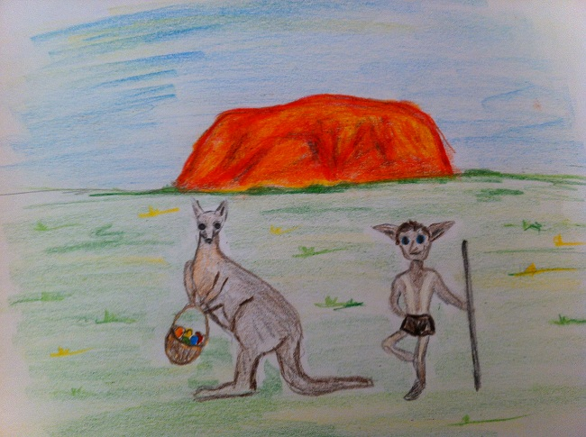
Immer wieder gab es einmal bizzare Sonderwünsche von Mrs.
Williams. Vor zwei Jahren hatte sie ein viktorianisches Gartenfest
veranstaltet und alle Elfen hatten Tournürenkleider und Fräcke anlegen
müssen. Am Ende hatte es schon Spaß gemacht, aber so ziemlich alle
Elfen auf dem Anwesen hielten VW spätestens seit diesem Event für
ziemlich durchgedreht. Seit dem letzten Sommer hielten sie auch
Zucht-Sträuße. Zum einen ging es um das Fleisch, aber vor allem die
Eier und die Federn hatten es VW angetan. Lampen, Dekoartikel und
Schmuck wurden aus den Eiern und Federn gefertigt. Die Broschen waren
in der Zauberergemeinde heißbegehrt und wurden im florierenden
Elfenladen in Windeseile verkauft.
Und in diesem Jahr waren eben Ostereier dran. Wobei die nicht
nur verkauft werden sollten, sondern eine weitere fixen Idee von VW
begleiteten. Ein großes Ostergelage in traditionell schottischer
Kleidung mit mehreren Osterfeuern sollte es geben. Sie war schon
speziell, die VW. Doch alle mochten sie gern, vielleicht gerade
w e i l sie so exzentrisch war. Einige freiwillige
Elfen, die bei der Vorbereitung helfen wollten, waren in Gruppen
eingeteilt worden. Ein Trupp von sechs Elfen schneiderte, eine andere
Gruppe von fünf Elfen präparierte das Essen. Rowdie, Alomi und Antolin
bemalten die Eier. Lange. Ausdauernd. Seit zwei Tagen waren sie dran.
Es dauerte, denn VW hatte wie so oft angeordnet, dass „Handarbeit“ zu
leisten wäre. So nannte sie es, wenn Magie bei der Herstellung
untersagt war. Die Drei hatten zugegebener Maßen aber auch ein
bisschen gebummelt …
Rowdie verzog sein ohnehin zerknautschtes Gesicht und sah
missmutig drein. „Wie viele müssen wir denn noch?“, fragte er und sah
um sich. „Wir haben 108 und müssen also noch 92.“, antwortete Antolin
grinsend, ein junger Hüpfer, gerade erst jährig geworden und ebenfalls
in Diensten von VW. Sein Gesicht war farbverschmiert, weil er sich
immer wieder den Schweiß von der Stirn wischte, vorher aber vergaß,
seine Hände abzuwischen. „Hühnereier!“, schnaubte Rowdie, „die wären
kleiner gewesen! Und wieso 200?“
Sie hockten vor einem der Elfenhäuser und malten und malten.
Allerlei geschäftiges Treiben fand um sie herum statt. So war gerade
eine Gruppe Pferde auf dem Weg zum Longierplatz vorbeigeführt worden.
In der Ferne konnten sie eine größere Gruppe Straußen erkennen, die
von mehreren Elfen voran getrieben wurden. „Ah, guck mal, Rora und
seine Helfer bringen die Straußen auf die neue Weide. Hoffentlich
kommen die hier nicht zu nah vorbei, die machen eine Menge Staub.“,
bemerkte Alomi. Schweigend vertieften die Drei sich wieder in ihre
Arbeit und malten, tupften, zeichneten, pinselten. Nur ab und zu
schnaubte Rowdie leise: „Handarbeit!“, und brummelte etwas, woraufhin
Alomi und Antolin sich angrinsten.
Sie hatten nicht bemerkt, dass die Straußengruppe mittlerweile
ziemlich nah herangekommen war. Die Straußen waren ziemlich aufgeregt
und rannten kreuz und quer durcheinander. „Schnell, abdecken!“, rief
Antolin und war ein leichtes großes Tuch über die vordersten Reihen
der fertig bemalten Eier. Das fehlte noch, dass die schmutzig würden!
Er beobachtete die Straußen argwöhnisch, denn plötzlich war ihm ein
ganz anderer, sehr beunruhigender Gedanke gekommen. Die Straußen
würden hier ziemlich nahe vorbei kommen und es gab keinen Zaun
dazwischen. Hoffentlich wusste Rora die Biester zu bändigen. Zunächst
sah auch alles gut aus. Die ersten Strauße rauschten in einigen Metern
Entfernung an ihnen vorbei. Als schon gut 30 Tiere durch waren,
passierte es - eine kleine Gruppe jüngerer Vögel brach nach rechts aus
und raste genau auf die Drei zu - und die Eier! „NEEEEIIIIIN!“, schrie
Rowdie und warf sich den wildgewordenen Straußen vor die Füße. Doch
die sprangen hektisch über ihn hinweg - und mitten in die fertigen
Eier hinein. Sie rannten in Panik hin und her. Das Knacksen von vielen
Eierschalen unter dem großen Tuch war deutlich vernehmbar und Alomi
hatte die Hände vor den Mund geschlagen, der weit offen stand vor
Entsetzen. Plötzlich knallte es sehr laut und die Straußen schwebten
über den Eier. Sie zappelten mit den Beinen herum, richteten dort oben
schwebend keinen weiteren Schaden an.
Rora kam mit erhobenen Händen angerannt und japste:
„Entschuldigung! Die sind wie bekloppt heute. Ich hoffe, es ist nicht
schlimm?“. Er bugsierte die schwebenden Straußen an eine Stelle einige
Meter entfernt, ließ sie dort runter. Wie von einer Tarantel gestochen
flitzten die Tiere hinter ihren Artgenossen her.
Rowdie war auf die Knie gesunken. In seinem hochroten Gesicht
stand die blanke Wut. Alomi hatte mit Antolin vorsichtig das Tuch
gelupft. Es war noch schlimmer als befürchtet. Die ausgeblasenen Eier
waren ja recht filigran und bei dem Getrampel sofort zerbrochen. Ein
großes Splittermeer breitete sich vor ihnen aus. Nicht ein einziges Ei
war heile geblieben. Und sie hatten nur noch zwei Tage Zeit. Rora
stöhnte und raufte sich die Haare.
VW kam angerannt. Sie hatte aus einem der Fenster im Haus
beobachtet, was passiert war. „Oh, nein!“, rief sie. „Alle kaputt“,
sagte Rowdie zu ihr und sein Gesicht sah zerknautschter aus denn je.
„Alle?“ fragte VW. „Alle bemalten“, antwortete Antolin geknickt. Eine
Weile standen die 5 Elfen schweigend da. Die männlichen Elfen im
Schurz und braungebrannt, Alomi in ihrem rosa Hemdchen mit Bastrock,
VW in einer weißen Bluse mit dunkelblauem Rock. „Na dann,“, sagte VW
und krempelte entschlossen die Ärmel ihrer Bluse hoch, „wollen wir
mal!“ Roda, Alomi, Antolin, und Rowdie starrten sie fragend an. „Hier
wird dieses Jahr schottisch Ostern gefeiert - egal wie! Und wenn alle
Elfen die ganze Nacht malen, mich selbstverständlich eingeschlossen.“
„Äh, VW... das malen ist nicht das Problem,“ räusperte sich Alomi,
„wir haben nicht mehr genügend Eier. Du wolltest 200, wir haben nur
noch 92.“ Für einen kurzen Moment schaute die Grande Dame etwas
nachdenklich. Dann hellte sich ihr Gesicht auf und sie kommandierte:
„Alle ab in den Straußenstall, SOFORT!“. Sie selber marschierte flott
in Richtung Stallungen vorweg und jeder Elf, der ihr unterwegs über
den Weg lief, wurde eingesammelt.
Als sie den Straußenstall erreichten, war die Gruppe gut zwanzig
Elfen groß. VW baute sich mit in die Hüften gestemmten Händen vor
ihnen auf: „Hier wird dieses Jahr Ostern mit dicken, bunten Eier
gefeiert - komme was wolle! Wir werden jetzt alle Eier zusammentragen,
die wir kriegen können. Dann wird ausgeblasen und alle, ich wiederhole
ALLE widmen sich ab sofort unserem Osterprojekt!“ Rowdie räusperte
sich: „Könnten wir nicht auch Hühnerei“ - weiter kam er nicht, denn
VWs Augen funkelten ihn zornig an. „Ich sagte DICKE GROßE EIER, nicht
mickrige weiße kleine Dinger!“, wies sie ihn scharf zurecht. Antolin
gniggerte in sich hinein, versteckte sich aber flott hinter Alomi, als
VWs Blick in seine Richtung fiel.
In der nächsten Stunde suchten sie sämtliche Legestellen ab und
schleppten alle Eier herbei, die sie finden konnten. Sechs Elfen
bliesen die Eier im Rekordtempo aus. Sie hatten hochrote Köpfe und die
Augen quollen ihnen fast aus den Höhlen - aber niemand kam mehr auf
die Idee, aufzugeben. Denn VW selber sauste wie ein geölter Blitz hin
und her und schleppte unermüdlich die „dicken Eier“ heran. Wenn ihr
etwas wirklich wichtig war, dann gab es für sie kein Halten mehr.
Alomi, Rowdie und Antolin hatten unverzüglich wieder zu malen
begonnen. Mittlerweile hatten sie Unterstützung bekommen. Neun Elfen
malten und pinselten gleichzeitig. Rowdie hatte einmal kurz gefragt:
„Könnten wir nicht ein bisschen Magie...“, aber VWs Blick hatte ihn
erneut schnell verstummen lassen.
Zwei Stunden später lagen insgesamt fast 180 ausgeblasene Eier
vor den Elfen. Es waren schon wieder an die 50 Eier bemalt. Alle
beeilten sich, denn VWs Feste waren zwar seltsam, aber unheimlich
beliebt bei den Elfen. Nebenan wurde nun ein hübsches Feuer entzündet
und eine große Pfanne an einem Drei-Bein-Ständer darüber aufgehangen.
In diesem wurde ein riesiges Omelett aus den Inhalten zubereitet.
„Pause!“, rief VW schließlich und die kleine Gemeinde
versammelte sich um die große Pfanne. Mittlerweile waren alle Elfen
beisammen, die Aufregung war natürlich auf der ganzen Farm
herumgegangen wie ein Lauffeuer. Jeder hatte sich beeilt herzukommen,
um mit eigenen Augen zu sehen, was genau geschehen war. Mit einen
leisen Plopp erschien ein großer Stapel Teller und Besteck. Ein
weiterer Plopp produzierte Becher und Kannen mit Bier. In Handumdrehen
hatten alle Elfen einen großen Teller voller Omlette in der Hand und
saßen in einem weiten Kreis um das Feuer herum. Inzwischen konnten
auch alle über das „Straußendesaster“ lachen. Während sie aßen, nahm
die Geschichte immer seltsamere Züge an. Inzwischen hörte es sich so
an, als wären mindestens 100 Straußen durch die Eier gewalzt. Die noch
unbemalten und schon wieder fertigen Eier lagen gut beschützt
innerhalb des Elfenkreises, das bloß nicht nochmal ein Zwischenfall
passierte.
Sie saßen lange am Feuer, redeten, aßen, lachten und versprachen
sich, dass alles noch rechtzeitig zum Osterfest fertig sein würde.
Irgendwann dunkelte es schon langsam. Alle waren ruhiger geworden und
saßen still beieinander. Antolin unterbrach die Stille. „Ist fast, als
wäre heute schon Ostern.“ Und irgendwie war es das auch.
Lucie lebte ein ruhiges Leben. Sie hatte schon einige Jahre auf
diesem Planeten geweilt und einiges gesehen. Eigentlich könnte sie
nichts mehr überraschen. Doch dass ihre Enkelin Mathilda magisch
begabt war und seit dem letzten September auf eine Schule für Hexen
und Zauberer ging, das hatte sie schon noch verwundert. Mathilda
verbrachte die Osterferien immer bei ihrer Oma. Lucie hatte gehofft,
dass es auch dieses Jahr so sein würde. Mathilda schwärmte in ihren
Briefen nur so von der Schule. Mindestens einmal im Monat landete eine
Eule auf Lucies Türschwelle und brachte Nachricht von der geliebten
Enkelin. So sehr wie Mathilda die Schule zu lieben schien, befürchtete
Lucie sie würde lieber dort die Ferien verbringen wollen. Die junge
Hexe berichtete ihrer Oma immer ausführlich davon, was sie im
Unterricht neues gelernt hatte.
Zwei Wochen vor Ostern kam erneut ein Brief von Mathilda:
Liebste Omi, du glaubst nicht, was ich heute im Unterricht für
Verwandlung gelernt habe! Wir haben doch tatsächlich Eier bunt
gezaubert. Wir beide haben die ja jedes Ostern gemeinsam mit
Marmorfarbe gefärbt. Aber weißt du, so geht das viel schneller und man
kann auch alle möglichen Farben und Muster auf die Eier zaubern. Ich
bin so froh, dass ich das gelernt habe. Es macht unglaublich viel
Spaß! Vielleicht kann ich dir das ja irgendwann mal zeigen. Ich drück
dich, deine Mathilda
Lucie standen die Tränen in den Augen. Einerseits freute sie
sich für ihre Enkelin, dass sie beim Zaubern solche Fortschritte
machte und Spaß daran hatte. Andererseits verdeutlichte sich ihr
Gefühl, dass Mathilda sie wahrscheinlich nicht besuchte. Was sollte
der jungen Hexe auch daran liegen mit ihrer Oma auf langweilige nicht
magische Art Eier zu färben.
Die folgenden Tage ging Lucie nur ungern aus dem Haus. Der
kleine Laden von Mrs Cross, den man getrost als „Tante Emma-Laden“
bezeichnen konnte, auch wenn Mrs Cross nicht Emma hieß, hatte nämlich
wie jedes Jahr allerhand Utensilien um Eier zu färben und zu
dekorieren. Bei jedem Einkauf, den Lucie trotzdem tätigen musste wurde
sie schmerzlich daran erinnert, dass in diesem Jahr die Tradition
nicht mehr fortgeführt würde. Sie kaufte keine Eierfarben, denn wenn
Mathilda nicht käme, dann wollte sie auch alleine keinen Strauch mit
den bunt gefärbten Eiern aufstellen.
Lucie stellte sich bereits auf ein einsames Osterfest ein. Seit
ihr Mann Richard vor 6 Jahren gestorben war, würde dies das erste
Osterfest sein, das Lucie komplett allein feiern müsste. Die
Erinnerung an die Freude, die Mathilda in ihr Haus brachte, schmerzte
sehr.
Eine Woche vor Ostern saß eine sehr zerzaust aussehende Eule auf
Lucies Türschwelle. In ihrem Schnabel hielt sie einen arg
zerknitterten Brief. Lucie nahm ihr den Brief ab und stellte der Eule
schnell ein wenig Wasser und ein paar Körner hin. Sie musste einiges
auf dem Weg durchlitten haben. Während die Eule aß und trank, öffnete
Lucie den Brief. Natürlich war er von Mathilda:
Liebste Omi, ich hoffe du hast alles vorbereitet, denn ich
komme morgen Abend aus Hogwarts direkt zu dir. Ich freue mich schon
darauf mit dir wieder Ostereier zu färben. Auch wenn ich das nun mit
Zauberei kann, es geht doch nichts über den Spaß, den wir dabei immer
haben. Ich drück dich dann morgen in echt, deine Mathilda
Lucie war sprachlos. Mathilda kommt doch. Erst allmählich wurde
ihr klar, was das „morgen Abend“ aus dem Brief bedeutete. Die
zerzauste Eule musste die ganze Nacht unterwegs gewesen sein, also
kommt Mathilda noch am selben Abend an. Lucie überlegte nicht lange
und hastete zu Mrs Cross. Zum Glück hatte diese noch weiße Eier,
Holzspieße, Steckmoos und die Marabu easy marble Marmorierfarbe.
Becher, Klebefilm, Streichhölzer, Nähgarn und Schere hatte Lucie immer
im Haus. Mit einem breiten Lächeln auf den Lippen, dem Material für
das Färben und natürlich Zutaten für Kuchen und Osteressen im Korb,
ging Lucie nach Hause. Die Eule war bereits wieder davon geflogen und
Lucie war froh, dass sie sich offenbar erholt hatte. Schnell bereitete
sie noch Mathildas Bett vor.
Die Zeit bis zum Abend verging wie im Flug. Als es gerade begann
zu dämmern, bog das Auto von Lucies Tochter Samantha in die Straße
ein. Lucie ging freudig auf das nun haltende Auto zu: „Sam, Tildalein,
wie freue ich mich euch zu sehen.“ „Hallo Mum, es ist auch schön dich
zu sehen“ erwiderte Samantha, die gleich ausgestiegen war, und gab
ihrer Mutter einen Kuss. „Du musst Mathilda ja mit etwas ganz
besonderem gelockt haben, dass sie ihr geliebtes Schloss verlässt. Sie
hat ja sogar Weihnachten lieber dort verbracht.“ Lucie schaute etwas
verwundert. Mathilda schien nicht glücklich, sie schmollte im Auto.
„Sam, was ist denn mit ihr los? Wir wollten nur, wie jedes Jahr Eier
färben. Ich dachte, sie zeigt mir auch gleich freudestrahlend wie sie
das zaubern kann“ entgegnete Lucie. „Tja, Mutti, da hat sie wohl die
Rechnung ohne das Zaubereiministerium gemacht. Das untersagt nämlich
minderjährigen Hexen außerhalb der Schule zu zaubern.“ Lucie wurde
gleich klar, dass nur sie es schaffen würde die gar nicht mehr so
kleine Tilda aus dem Auto zu bekommen. Sie stieg neben ihr ins Auto
ein und redete etwa 5 Minuten mit ihrer Enkelin, dann stiegen die
beiden aus. „Mum, wie… Wie hast du das angestellt?“ fragte Sam, doch
Lucie lächelte nur, zwinkerte zu Mathilda und sagte: „Das bleibt unser
Geheimnis.“ Immer noch verwundert brachte Sam den Koffer ihrer Tochter
ins Haus. Sie gab Mathilda noch einen Kuss, verabschiedete sich ebenso
für die nächsten 2 Wochen von ihrer Mutter und fuhr dann wieder heim.
Mathilda war, kaum dass ihre Mutter um die Ecke gebogen war, in
die Küche geeilt und wollte direkt mit dem Färben beginnen. „Aber,
aber, meine kleine“ sagte Lucie: „dafür ist doch noch genug Zeit. Lass
uns morgen damit anfangen, wenn es hell ist.“ Nur Mathilda wollte
nicht warten und so gab Lucie nach. „Aber die Zweige für den
Osterstrauch schneiden wir erst morgen, du kleine Hexe!“ „Geht klar
Omili“ flötete Mathilda und krempelte sich die Ärmel hoch. Ihr etwas
ratloser Blick verriet Lucie, dass Mathilda wohl nicht mehr genau
wusste, wie vorzugehen war. Geduldig erklärte sie ihrer Enkelin, was
zu tun war: „Zuerst müssen wir die Eier auspusten.“ Schon fiel
Mathilda der erste Schritt wieder ein: „Stimmt Omi, wir machen oben
und unten ein kleines Loch in das Ei, ganz vorsichtig, damit nicht
mehr kaputt geht und pusten dann das Ei in eine Schüssel. Dann gibt es
heute wieder Rührei zum Abendbrot, oder?“ Lucie lächelte: „ Aber fünf
Eier brauchen wir auch für den Kuchen. Den backen wir aber wirklich
erst morgen!“ Während Mathilda die zehn Eierschalen leerte und
vorsichtig etwas ausspülte, holte Lucie die restlichen Materialien.
Sie band Klebestreifen um die flache Seite der Holzspieße darauf
steckte sie die leeren sauberen Eier. Durch den Klebestreifen sitzen
sie fest auf dem Spieß und rutschen nicht weg. Die Holzspieße steckte
sie mit der spitzen Seite in einen Block Steckmoos. „Unsere Fall- und
Bruchversicherung“ lachte Mathilda. Sie nahm sich nun den Becher und
füllte ihn etwas mehr als bis zur Hälfte mit lauwarmem Wasser. Lucie
tropfte von jeder Farbe einen kleinen Klecks in das Wasser und
Mathilda verwirbelte die Farbtropfen mit einem weiteren Holzspieß. Sie
nahm sich ein Ei am Spieß und tauchte es in den Becher mit der Farbe,
drehte etwas und zog es wieder heraus. Lucies und Mathildas Augen
strahlten, es war ein perfektes Regenbogen-Ei, das nun zum Trocknen
wieder in das Steckmoos gesteckt wurde. Sie wiederholten dies mit den
übrigen neun Eiern, nahmen mal mehr, mal weniger Farben. Wenn es ihnen
nach dem ersten Tauchen nicht gefiel, machten sie es nach etwas
Trockenzeit noch mal, bis sie zufrieden waren. Schließlich steckten
zehn Eier im Steckmoos, sorgfältig platziert, damit sie sich nicht
berühren und auch nicht umkippen. Glücklich räumten die beiden die
Farben und den Becher weg. Lucie machte Rührei zum Abendbrot und
nachdem beide anschließend noch Karten gespielt hatten, gingen sie ins
Bett.
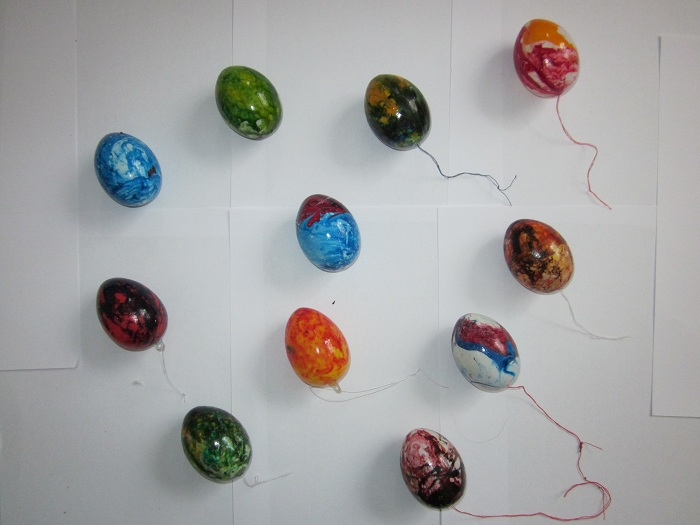
Am nächsten Morgen erwachte Lucie und hörte Mathilda schon in
der Küche singen. Ein wohliger Duft zog das Treppenhaus herauf. Im
Morgenmantel lief Lucie in die Küche. Ihre Enkelin stand dort am Herd
und machte Eierkuchen zum Frühstück. Als sie ihre Oma erblickte,
strahlte sie bis über beide Ohren. „Ich bin so froh, wieder hier zu
sein, Omi, da wollte ich dich einfach überraschen.“ Mathilda sah so
glücklich aus, dass auch Lucie nicht anders konnte als fröhlich zu
sein. Sie frühstückten gemeinsam und berieten sich dabei bereits, wie
sie mit den Eiern weiter machen wollten. „Lass uns zuerst die Zweige
dafür schneiden, nachdem wir uns frisch gemacht haben“, sagte Lucie
und deutete auf Mathildas Schlafanzug, den sie noch trug. So fanden
sie sich also am Vormittag im Garten ein und suchten nach den besten
Zweigen für ihren Osterstrauch. Lucie liebte ja die
Korkenzieherweidenzweige oder auch die Weidenzweige mit den Kätzchen.
Aber Mathilda fragte nur nach den Zweigen, die immer so schön gelb
blühen. „Das ist die Forsythie, aber die sehen leider sehr trocken
aus. Ich glaube die brauchen noch ein wenig Wasser und mit denen
hätten wir keine Freude. Was hältst du von den Wachsblumenzweigen
hier?“ Mathildas schaute die dünnen Zweige mit den weißen
Knospendolden skeptisch an, nickte dann aber doch. Lucie schnitt
einige Zweige davon ab und passte auf, die schönen Knospen nicht zu
verletzen, damit der Strauch auch wirklich blühen würde. Wieder im
Haus stellten sie die Zweige in eine große Vase mit Wasser, dann
widmeten sie sich erneut den Eiern. Diese waren nun ausreichend
getrocknet und konnten also zum Aufhängen vorbereitet werden. Dazu
schnitt Lucie von zehn Streichhölzern die Köpfe großzügig ab. Mathilda
knotete an jedes Stück etwa 15 - 20 cm von dem Nähgarn fest und machte
eine Schlaufe zum Aufhängen. Vorsichtig zogen beide dann jeweils die
Spieße aus den Eiern und steckten das Streichholzstück durch das Loch
ohne den Faden loszulassen. Das Aufhängen blieb Mathildas Aufgabe. Sie
freute sich immer, die Eier zu arrangieren und strahlte auch diesmal
vor Freude. Lucie räumte währenddessen schonmal auf und beobachtete
ihre Enkelin zufrieden. Was war sie doch für ein Narr gewesen, zu
denken, ihre Enkelin würde keinen Spaß mehr bei ihr haben.
Mathilda sah ihre Oma mit glänzenden Augen an: „Omi, das ist
echt viel besser als Eier mit Zauberei bunt zu verwandeln!“
Niemand hätte je behauptet, dass Matthew Weasley und seine
Familie arm wären. Denn das wäre eine Teufelslüge gewesen. In ihrem
Haus blitzte es nur so schön, dass man schon beim bloßen Anblick nicht
glaubte, was man sah. Ihr Haus hatte eine runde Tür, wie ein Bullauge.
Sie war frisch grün gestrichen und in der Mitte saß ein glänzend
goldener Messingknopf. Die Tür führte zu einer röhrenförmigen langen
Halle, einer Art Tunnelröhre, dessen Boden mit rotem Teppich und
bleichweißen Fliesen ausgelegt war. An den Wänden schimmerten goldene
Figuren und in Vitrinen leuchteten die goldenen Medaillen im Licht der
warmen Nachmittagssonne. Das einzige Fenster in diesem Raum war an der
Decke. Es war achteckig und an allen Seiten mit Juwelen besetzt.
Dadurch schien die Sonne und man konnte Vögel am Himmel beobachten.
Der Tunnel führte ins Speisezimmer, einem runden Raum. Hier stand ein
großer Esstisch aus Mahagoni-Holz, der schon mit silbernen Tellern und
goldgeschmückten Gläsern gedeckt war. Zur Mittagszeit wurden hier
dreißig Gänge aufgetischt, gestern gab es am Anfang Fischplatte mit
gedünsteten Möhren und am Ende Walnusseis mit heißer Karamellsoße.
In einem weiteren Zimmer befand sich die Küche mit
edel-schwarzen Fliesen und einer Spüle aus Gold. In gläsernen
Schränken standen goldene Teller, Tassen, Becher, Gläser, Schüsseln
und für jedes Besteckstück war eine Halterung angefertigt. Die
Speisekammer hatte eine Eichentür mit einem schwarzen Edelholzgriff
und war von oben bis unten mit Leckereien, wie geriebenem Käse, Speck,
einem halben Schwein, Erdnussbutter im Fass, gerösteten Nüssen,
Preiselbeeren, feinsten Weizenbrötchen und Schokokuchen gefüllt.
Und auch im Schlafzimmer wurde nicht an Dekoration gespart. Die
riesigen federweichen Betten standen auf dicken Goldfüßen und das
Fenster hatte einen Juwelenrahmen. Der Nachttisch war aus feinstem
Ebenholz. Auch die Kinderzimmer bekamen ähnliche Gestaltung. Sämtliche
weitere Räume der Villa waren wunderschön, doch sie sind zu viele um
sie aufzulisten.
Diese Weasleys waren sehr wohlhabende Leute und sie lebten seit
Generationen so gut. Nur eine Generation der Weasleys erbte nicht den
Reichtum. Matthews Bruder, Mark Weasley, war so arm wie eine
Kirchenmaus. Doch der kommt erst später ins Spiel.
Eines Morgens, als die Sonne schien und das Gras grün war, saß
Matt draußen im Garten und genoss die Wärme. Es war Ostern, doch
Zauberer glaubten nicht wie Muggel an sprechende Hasen, die mit Körben
auf dem Rücken durch den Garten hoppelten und bunt angemalte Eier
versteckten. Das war doch der reinste Schwachsinn.
Aber sollten die Muggel ruhig ihren Spaß an den albernen
Theorien haben, Matt tat es jedenfalls ganz sicher nicht. Er wollte
auf sein Alter nicht auch noch mit den Kindern verstecken spielen.
Matts Kinder hießen Lucy und Ben und waren drei und sieben Jahre alt.
Lucy war eine richtige kleine Expertin, wenn es darum ging, andere
Leute in den Wahnsinn zu treiben. Einmal hatte sie, ohne dass er es
gemerkt hatte, seine Lakritzbonbons in Hasenköttel verwandelt. Matt
hatte sie ohne eine Ahnung gegessen und alles wieder ausgespuckt,
nachdem Lucy mit quakender Stimme verkündete: „Hase hat A-A in Bonbon
gemacht!“
Doch heute sollte Matt nichts stören. Nichts, außer …
„Matt, mein Bruder, bist du hier?“
Eine Stimme tönte durch die Hecke und es raschelte hektisch im
Gebüsch. Matt kniff die Augen zusammen und antwortete nicht.
Hoffentlich schaute er nicht in den Garten …
„Ich weiß dass du im Garten bist, Matthew! Täusch bloß nichts
vor!“
Na, super.
Matt öffnete die Augen einen Spalt breit. Die Hecke war jetzt
unordentlich und überall lagen wunderschöne Blätter auf dem Boden. So
eine Schweinerei. Und inmitten der Unordentlichkeit stand ein Mann. Er
war ziemlich groß und stämmig und sein Harr war knallrot und klebte
ihm am klobigen Kopf. Er trug eine braune Jeans, einen olivgrünen
Pulli und dicke schwarze Schuhe.
Obwohl es Matts Bruder Mark war, sah Matt doch ganz anders aus.
Er hatte zwar dieselben roten Haare, doch da hörte die Ähnlichkeit
auch schon auf. Matts Harre waren ordentlich und dick und sein Körper
eher dünn. Matt legte Wert auf äußeres Aussehen und er würde nie Marks
Klamotten tragen. Meistens hatte er ein Jackett und ein Polohemd an
und trug auf Hochglanz polierte Schuhe. Ganz privat trug er auch
einmal einen Designerpullover und normale Jeans.
Matt stand auf. Es nutzte nichts. „Ich bin hier Mark, was willst
du?“, fragte er, „hör mal, ich habe nicht ewig Zeit, ich muss noch ein
paar dringende Geschäfte erledigen, das lässt sich nicht verschieben.“
Das war zwar ein bisschen gemogelt, aber die Zeit mit seinem
Bruder zu verbringen, entsprach nicht gerade Matts Vorstellungen eines
schönen Tages. Mark blickte ihn neugierig an.
„Was für Geschäfte denn? Hast du ein neues Projekt? Ist es
wichtig?“
Matt seufzte. „So in etwa. Aber ich habe jetzt wirklich keine
Zeit für dich. Kannst du nicht ein andermal wiederkommen? Es ist
ziemlich unpassend heute.“
Mark schüttelte den Kopf. „Geht nicht, ich brauch deine Hilfe.
Du musst mir Geld leihen, ich habe bei Tim mein halbes Vermögen im
Spiel verloren. 5.000.000. Galleonen.“
Matt starte ihn entsetzt an. Es kam öfters vor, dass Mark sein
Geld im Spiel verlor, aber noch nie hatte er eine so hohe Summe ins
Spiel gebracht. Mark spielte oft bei Tim, einem Zauberergeschäftsmann,
der geschickt Geld ansammelte und andere Leute reinlegte. Mark kam mit
seinen Sorgen immer zu Matt und sein reicher Bruder hatte ihm schon
oft Geld geliehen, auch wenn es nur war, um Mark loszuwerden. Mark
hatte dass Geld nur vereinzelt zurückgezahlt und die Schulden immer
wieder erhöht.
Als Matt erfahren hatte, wie viel Geld Mark von ihm verlangte,
war er erst ungläubig und dann wütend geworden.
„Du kannst doch nicht glauben, dass ich dir soviel Geld gebe! Du
hast sie doch nicht mehr alle, das von mir zu verlangen!“, schrie er
ihn an.
Mark runzelte die Stirn. „Komm schon, du bist doch reich! Du
hast doch so viel Gold, da kannst du deinem armen Bruder doch mal
etwas abgeben, damit er seinen Sohn ernähren kann! Komm schon,
Bruderherz.“
Matt rastete aus. „Auf diese Nummer fall ich auch nicht noch
einmal rein! Ich kann dir nicht dauernd Geld leihen, kapier das doch
mal! Egal wie sehr dein Sohn hungert!
Nun wurde auch Mark wütend. „Du hast ja ein schönes Leben,
liegst hier in der Hängematte, hast jeden Tag zu Essen im Haus und den
totalen Luxus! Ich muss jeden Tag das Haus zusammenhalten und Mary und
Arthur ernähren!“ Mary war Marks Frau und Arthur sein 10- jähriger
Sohn.
Matt lief rot an. „So schlimm hast du es nun auch wieder nicht!“
„Du kannst ja mal mit zu mir kommen!“ erwiderte sein Bruder,
„und gucken, wie es um uns steht.“
Matt schnaubte. „Gerne. Dann komme ich jetzt gleich mit.“
Mark lächelte fröhlich.
Sie flogen auf Besen, zwei ungemütlichen, harten und splittrigen
Dingern, doch Matt ließ sich nichts anmerken. In der zugigen Luft
wurde ihm eisig kalt und schon bald ärgerte er sich, nicht den
Schafsfellmantel angezogen zu haben. Mit seiner dünnen Designerjacke
war er ein Eis am Stiel. Sie flogen lange durch die Wolken und
irgendwann, als Matt schon dachte am Besen angefroren zu sein, ging
Mark in den Landeflug. Matt folgte ihm nach unten. Er landete hart,
denn der Garten war, im Gegensatz zu der lockeren Erde und dem schön
geschnittenen Gras in Matts Garten, kalt, ungemütlich und das Gras war
lang und stachelig und piekte ihn in den Knöchel. Nichts für Matt.
Doch er sagte nichts und folgte Mark wortlos zur Eingangstür.
Vor der niedrigen Tür stand ein kleiner Käfig, in dem ein paar
fette braune Hühner saßen, alle auf einem Haufen. Das Haus war zwar
auch riesig, aber längst nicht so schön in der Form. Die Holzwände
waren alle wacklig und mehrere Zimmer waren an dass eigentliche Haus
in luftiger Höhe angebaut. Mark wollte ihn hereinführen, doch Matt kam
ihm zuvor. „Ich bleib erstmals hier im Garten und schau mir alles noch
einmal genau an.“
Mark nickte. „Das ist okay. Ich hole uns einen Kräutertee.
Willst du lieber Pfefferminze oder Basilikum?“
„Pfefferminz“ antwortete Matt, doch im Inneren schüttelte er
sich. Kräutertee! Hatte Mark keinen Kaffee oder wenigstens Butterbier?
Anscheinend nicht. Er setzte sich auf einen Stuhl und wartete.
Irgendwann ging die Tür auf, doch es war nur Arthur. Seine Nase lief
die ganze Zeit und er trug einen schäbigen Umhang und wollene Hosen.
Er bückte sich nieder und fischte etwas aus dem Gras. Ein Gnom. Der
kartoffelköpfige Wicht schrie auf, als der Junge ihn über den Zaun
schleuderte. Arthur packte noch ein paar weitere und schleuderte sie
weg. Plötzlich fiel einer in die andere Richtung und fiel auf Matts
Schoß. Matt hätte ihn fast angewidert weggestoßen, als ihm eine
Besonderheit auffiel:
Der Gnom trug einen Korb auf dem Rücken.
Und in dem Korb war ein Ei.
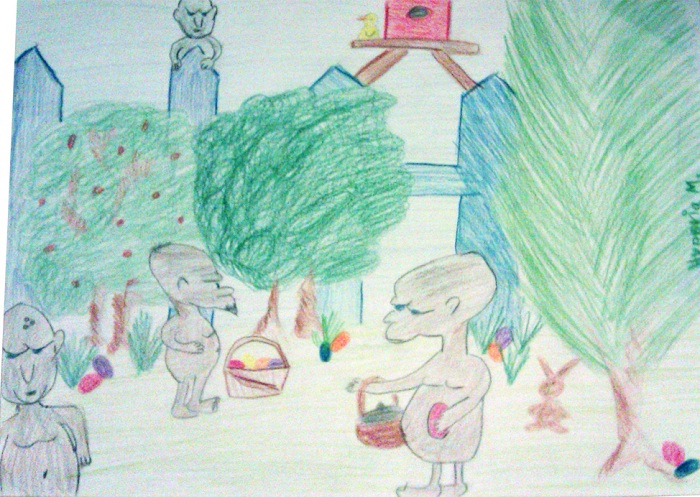
Ein bunt angemaltes Osterei.
In dem Moment ging Arthur hinein und Matt war allein. Naja, fast
allein. Er hob das winzige Geschöpf auf Gesichtshöhe und betrachtete
es genauer. Der osterhafte Gnom hatte einen weißen Vollbart und ein
(für Gnome) sehr schlaues Gesicht. Seine winzigen Hände hatte er zu
drohenden Fäusten geballt und sie erhoben. Matt ließ den Gnom auf der
Stuhllehne nieder und stieg vorsichtig vom Stuhl. Darauf bedacht,
seine Hose nicht dreckig zu machen, ging er in die Hocke und nahm
vorsichtig die Grashalme auseinander. Schon bald wurde er fündig. Rund
um ein kleines Loch standen noch mehr Gnome mit Ostereiern. Er fischte
einen raus, eine Gnomin, den Gesichtszügen nach zu urteilen, wenn man
das bei Gnomen überhaupt sehen konnte. Die Gnomin schrie auf und
plötzlich fing sie an, zu reden. Zwar mit einer dünnen, hohen Stimme,
aber sie redete.
„Was bildest du dir ein, Menschenwesen“, keifte sie, „lass mich
sofort wieder runter!“
Matt dachte wie immer praktisch. „Und was kriege ich, wenn ich
dich runterlasse?“ fragte er und ließ die Gnomin über Kopf baumeln.
Sie schrie zornig auf und fiepte: „Warum solltest du dafür etwas
bekommen?“
Er grinste, eine für ihn eigentlich nicht sehr attraktive Mimik,
und sagte: „Du hast eh keine Chance. Also, was bekomme ich?“
Sie fauchte und keifte zornig. Matt war sich schon sicher, dass
etwas für ihn heraussprang, doch plötzlich spürte er einen
schmerzhaften Stich im Finger. Er schaute auf seinen linken
Zeigefinger, der die ganze Zeit im Gras gelegen hatte und fand dort
einen Gnom hängen, den gleichen, den er auf der Stuhllehne hatte
liegen lassen.
Jetzt reichte es Matt doch. Mit einem Knurren schüttelte er den
Gnom ab und ließ die andere ins Gras fallen. Er stand auf und war im
Begriff zu gehen, als der Gnom, der ihn gebissen hatte, rief: „Hey,
Mensch! Wolltest du nicht etwas von uns?“ Matt drehte sich ärgerlich
um. „Ich wüsste nicht was du meinst.“
„Du wolltest doch irgendetwas, sonst hättest du sie doch nicht
erpresst, oder?“
„Ja, kann sein.“
„Und was war das?“
„Das ist egal, du Wicht!“
„Wir könnten dir aber einen Wunsch erfüllen, das liegt in unsere
Natur. Aber natürlich nicht ohne Gegenleistung.“
Jetzt ging Matt in die Knie. „Was meinst du damit?“
„Wenn du bereit wärst, uns bei einer Kleinigkeit zu helfen,
würden wir dir einen Wunsch erfüllen.“
Matt dachte nach. „Und was wäre das für eine Kleinigkeit?“ Der
Gnom lächelte. „Wir sind es, die Jahr für Jahr den Muggelkindern
Ostereier bringen. Doch wir sind einfach zu wenige geworden. Wenn du
nun bereit wärest, ein paar Ostereier auszuliefern, könnten wir dir
einen Wunsch erfüllen.“ Mark lachte laut auf. Man würde ihn für
verrückt erklären, wenn er in Muggelgärten bunte Eier verteilen würde!
Der Gnom lächelte immer noch. „Und was wäre dein Wunsch?“
Mark schüttelte den Kopf und lächelte finster. „Das ist
unmöglich. Ihr könnt meinen Wunsch gar nicht erfüllen. Aber wenn du es
unbedingt wissen willst, ich würde mir wünschen, dass mein Bruder
nicht mehr und auch nicht mehr in Zukunft, bei Lottospielen mitmacht
und von mir Geld leihen muss.“ Insgeheim hoffte Matt immer noch, dass
der Wunsch erfüllbar war, doch er wusste, dass der Gnom gleich den
Kopf schütteln würde und ihm sagen würde, dass er diesen Wunsch nicht
erfüllen könnte.
Doch der alte Gnom tat nichts dergleichen. Er strich sich
gedankenverloren über seinen Bart und wandte sich schließlich seinen
Gesellen zu. Er fiepte und piepste etwas, vermutlich Gnomisch. Matt
hatte einmal einen Fremdsprachenkurs belegt, doch diese Rasse hatte
einen völlig fremden Akzent. Sie steckten die knubbeligen Köpfe
zusammen, was in Anbetracht ihrer Größe ungemein lustig aussah, und
tuschelten auf Gnomisch durcheinander. Schließlich gingen sie
auseinander und der bärtige Zwerg trat vor. Offenbar war er der Chef
der Kompanie. „Wir können dir deinen Wunsch erfüllen“, sagte er mit
ungemein geheimnistuerischer Stimme, „aber nur unter folgenden
Forderungen: Erstens wirst du uns nichts mehr tun und in Ruhe lassen
und zweitens wirst du im Garten eines Muggel-Kinderheims Eier
verstecken. Wir können dir einen Tarnzauber mitgeben, damit dich kein
Muggel sieht, aber mehr können wir auch nicht tun. Also bist du selber
schuld, wenn du gegen einen Muggel läufst.“ Er beendete seine Rede und
schaute Matt erwartungsvoll an. Der überlegte einen Moment.
Vielleicht...
„Okay, ich mach´s“, sagte Matt nach einer kleinen Pause, „aber
ihr erfüllt ganz sicher meinen Wunsch?“
Der kleine Mann nickte wichtigtuerisch und hielt Matt die Hand
hin. „Dann sind wir also im Geschäft?“
Und Matt schlug ein.
Das Muggelhaus war groß und bleigrau, die Fenster dreckig. Matt
rieb sich die Hände und hauchte sie an. „Na dann, mal los.“ sagte er
zu sich selbst und stiefelte auf den Gartenzaun zu. Die Gnome hatten
ihm einen Tarnzauber auferlegt und keine Menschenseele konnte ihn nun
sehen. Er zog seinen Zauberstab und tippte damit den Gartenzaun an. Er
schwang wie eine Tür, lautlos auseinander. Matt stieg in den Garten,
darauf bedacht, nicht gegen einen Busch zu laufen, denn Büsche und
Bäume gab es viele im Garten des Waisenheims: Mächtige und hohe
Buchen, Eichen, Fichten und Tannen und kleine, dicke Hecken aus
Brombeergestrüpp und Walnussästen. Perfekt zum Verstecken von Eiern.
Matt ging auf die Suche und schon bald hatte er den Korb halb
leer, als die Tür aufging. Heraus kam ein Junge. Er war ärmlich
bekleidet und ziemlich schmächtig. Arthur? dachte Matt einen Moment
verwundert, doch dann fiel ihm ein, dass sein Neffe ja zu Hause bei
Mark war und nicht in einem Muggelwaisenheim.
Der Junge war ein anderer. Er setzte sich zwischen zwei dicke
Kiefern und schwieg. Matt beobachtete ihn. Und plötzlich verspürte er
ein Gefühl, dass er noch nie gehabt hatte: Mitleid. Mitleid mit dem
Jungen und allen Armen und Arthur und allen anderen die nie so gut
gelebt hatte wie er. In dem Moment stand der Kleine auf und verließ
den Garten.
Matt stand eine Weile da und dachte nach. Er wollte dem Jungen
und allen anderen Kindern des Heims helfen, wie die Ostergnome es
taten. Er holte die letzten Eier aus dem Korb und legte sie sorgfältig
zwischen die Kiefern, bei denen der Junge gesessen hatte. Dann grub er
in seinen Taschen nach seiner Geldbörse und legte einen Haufen
Goldstücke dazu. Matt verließ den Garten, so still wie er gekommen
war.
„Wir haben deinen Wunsch erfüllt“, empfing ihn der Gnom auf der
Wiese, „weil du deine Aufgabe gut getan hast. Möchtest du dir deinen
Bruder mal anschauen?“
Matt nickte zögernd. Der Gnom holte einen kleinen Spiegel aus
dem Gras, kaum so groß wie Matts Handfläche, doch für den Gnom musste
es ein Riesenstück sein. Der kleine Wicht tippte mit dem Zeigefinger
auf den Spiegel und das Bild verschwamm.
Plötzlich sah Matt Arthur und Mark wie sie zusammen mit den
Hühnern spielten und gemeinsam glücklich waren. Ihm wurde warm ums
Herz. Dann änderte sich das Bild. Dass Waisenhaus erschien, doch es
war mit bunten Schleifen bedeckt und im Garten liefen lachende Kinder
herum. Die Bäume waren bunt geschmückt und mitten im Geschehen stand
der kleine Junge, den Matt gesehen hatte. „Frohe Ostern!“ rief er
glücklich. „Frohe Ostern“, antwortete Matt leise und lächelte.
Die Familie von Veronika, versucht ihr Osterfest ohne Zaubern zu
organisieren. Veronika geht in die dritte Klasse von Hogwarts und ist
über den Osterferien zu Hause Ihre jüngeren Geschwister Phil und
Zoltan (6. Jährige Zwillinge) bürsten krawall und ihre jüngste
Schwester Mel (3. Jahre) stellt mit ihren neuentdeckten
unkontrollierbaren Zauberkräften alles auf den Kopf.
Mein Schlaf wurde abrupt beendet, als meine Tür aufflog und
meine beiden Brüder Phelps und Zoltan, auf einen Kochtopf hämmernd,
auf mein Bett gesprungen kamen. „Aufstehen Vero, heute ist
Backtaaaaag“, krakelte Zoltan in mein Ohr. Dass er den Back Tag so in
die Länge zog, lag daran, dass Zoltan der Süßigkeiten Liebhaber der
Zwillinge war. Sobald es um Kuchen, Kekse oder andere Leckereien ging
war er der erste der „hier“ rief.
„Zoltan, Phil, lasst eure Schwester in Ruhe aufstehen und kommt
mir lieber helfen. Schließlich wollen wir doch fertig sein, wenn Papa
nach Hause kommt.“ Meine Mum pfiff die beiden Rabauken zu sich und ich
war ihr in dem Moment unendlich dankbar.
Schon seit einer Woche, so hatte es mir Mum in einer Eule
mitgeteilt, fieberten die beiden dem heutigen Tag entgegen. Denn heute
war ihr erstes Ostern ohne Zaubern und für die zwei war es deshalb
etwas Besonderes. Es gehörte seit 5 Jahren zur Tradition in meiner
Familie, das Ostern das Fest war an dem wir so taten, als ob wir keine
Zauberer wären. Ich hatte es schon zwei-, dreimal miterlebt und so
hatte es den Reiz ein wenig verloren. Trotzdem half ich bei den
Vorbereitungen denn es war im Gegensatz zu dem pompösen Buffet in
Hogwarts, klein und bescheiden. Wild kreischend stürmten die beiden
wieder die Treppe wieder runter und ich atmete tief durch.
Von unten hörte ich das Poltern und Trampeln der Zwillinge und
das zusammenhanglose Brabbeln meiner jüngeren Schwester Mel. Sie war
erst drei, aber wirkte jetzt schon mit vollem Elan im Familienleben.
Obwohl sie alle auf Trab hielt war sie das Herzstück unserer Familie
und ich war stolz darauf, neben meinen zwei Wirbelwinden von Brüdern
auch noch meine kleine Schwester beschützen zu können. Und ich hatte,
wenn sie älter wäre, eine Freundin innerhalb der Familie.
Das Gebrabbel von Mel war verstummt nur um dann in ein grelles,
sirenenähnliches Klagen wieder aufzuleben.
„Veronika, kommst du bitte runter?! Jemand muss sich um Mel
kümmern, du weißt doch wie zickig sie momentan ist.“ Mum hatte diese
besondere Farbe in ihrer Stimme, die allen Familienmitgliedern runter
ging wie warmes Butterbier. Deshalb liebte ich meine Mum auch so.
„Veronika, bitte!“ Leichte Panik schwang jetzt in ihrer Stimme mit.
„Ich komme Mum, ich komme schon.“ Seufzend strich ich mir die durch
die Haare und schlüpfte in meine Kleidung. Das Gequengel von Mel wurde
unüberhörbar lauter und bevor meine Mutter die Nerven verlor, was
selten vorkam, sprintete ich die Treppe runter.
Mel lag auf ihrer Krabbeldecke und die Tränen liefen ihr über
das kleine Gesicht. „Da bist du ja“, der Ton meiner Mutter wurde
wieder ruhiger. Ich kniete mich zu Mel auf die Decke, zog sie in
meinen Schoß und wiegte sie ruhig hin und her. Sofort verstumme sie
mit ihrem Wehklagen und brabbelte wieder munter drauf los.
„Was wollen wir denn dieses Jahr backen ohne das wir zaubern
müssen, denn das gehört zu unserer Tradition an Ostern?“ Mum blühte
stimmlich wieder auf und Phil und Zoltan hüpften auf und ab. Ein
bisschen erinnerten sie mich an die Hüpf-weg-Bälle von Zonkos.
„Kekse“, das war Zoltan. „Nein, Kuchen!“ Phil stemmte entrüstet die
Hände in die Hüften. „Kekse, Kekse!“ „Kuchen!“ „Kekse!“ „Kuchen!“
Bevor das Ganze in einem handfesten Streit ausartete, hob ich Mel auf
meinen Arm und kam zu den beiden Streithähnen.
Phil und Zoltan standen schon nah beieinander und immer wieder
warfen sie sich „Kuchen!“ und „Kekse!“- Ausrufe entgegen. Die Empörung
war groß, als ich mich mit Mel zwischen sie stellte. „So und jetzt
benehmen wir uns und sind brav, sonst dürft ihr eure jüngere Schwester
trösten, wenn sie wieder weint.“ Die nicht ganz ernst gemeinte
Androhung wirkte sofort und beide blickten mich aus großen Augen an.
„Entschuldigung, Vero.“ Ich lächelte zufrieden und wandte mich dann an
meine Mutter.
„Mum? Hast du noch das Rezept von dem Osterlamm? Das, was wir an
meinem ersten Ostern ohne Zaubern gebacken haben?“ Ich sah meine
Mutter mit einem strahlenden Lächeln an, da mir vor meinem geistigen
Auge die Erinnerungen hochkamen.
„Du meinst das von Oma?“ Ich nickte und Mum warf einen Blick
über die Arbeitsplatte der Spüle, dort standen unsere Koch-und
Backbücher. Unter anderem auch das über mehrere Generationen
weitergegebene alte Kochbuch. Mit einem Jubelruf, zog sie das bereits
vergilbte in Leder eingebundene Buch vom Regal. „Hier müsste es drin
sein“, sie schlug das Buch auf und blätterte vorsichtig die Seiten um.
„Ja, genau hier ist es. Osterlamm nach Grandmas Art.“ Unsere Mum fuhr
mit dem Finger über die Zutaten und klatsche danach zufrieden in die
Hände. „Vero, legst du Mel bitte wieder auf ihre Decke“, sie lächelte
mir zu, während sie sich an die Jungs wand. „Und ihr geht mit mir zum
Hühnerstall.“ Zoltan und Phil preschten an Mum vorbei in den Garten,
sie zog die Terassentür hinter sich zu, welche das Kreischen der
Zwillinge und die ermahnenden Worte von Mum schluckte. Währenddessen
brachte ich Mel zurück auf ihre Decke, sie strahlte mich an und nahm
ihr Lieblingsspielzeug in den noch zahnlosen Mund. Ich gab ihr einen
Kuss auf das lichte Haar und ging wieder in die Küche. Dort überflog
ich selbst einmal das Rezept:
Osterlamm à la Grandma
Zutaten:
3 Eier
1 Eigelb
125 g Zucker
1 Päckchen Vanillezucker
125 g Mehl
25 g Speisestärke
75 g Butter
Die Eier und das Eigelb zusammen mit dem Vanillezucker schaumig
schlagen.
Das Mehl mit der Speisestärke vermischen und portionsweise in
den Eischaum sieben.
Vorsichtig unterheben.
Butter zum Schmelzen bringen, etwas auskühlen lassen und dann
tröpfchenweise in den Teig geben und reinziehen.
Osterlamm oder Osterhasenform mit Butter ausfetten und mit Mehl
bestäuben.
Dann bei 180 Grad (Ober- und Unterhitze) 35 - 40 Minuten
backen.
Lamm auskühlen lassen und aus der Form nehmen, mit Marmelade
(am besten keine zu bittere) einpinseln und mit Puderzucker oder
Kokosstreuseln bestreuen.
Bereits beim Lesen lief mir das Wasser im Mund zusammen, doch
ich wuselte durch die Küche und holte weitere Zutaten wie die Butter,
den Zucker, aus der alten Keksdose von Opa ein Päckchen Vanillezucker.
Da ich in Gedanken versunken war, merkte ich nicht, dass Mum mit den
beiden Rabauken wieder ins Haus gekommen war. Die beiden kamen mit
großem Gebrüll auf mich zu, das kleine Körbchen, in dem 5 Eier lagen,
schwankte bedrohlich hin und her. „Hast du schon alles zusammen
gesucht, hast du? Hast du? Hast du?“, Zoltan hyperventilierte fast, so
aufgeregt war er. „Ja, hab ich, mir fehlt nur noch das Mehl und die
Speisestärke. Und du atmest jetzt einmal tief durch, sonst kippst du
mir noch um, stell aber bitte vorher das Körbchen ab.“ Ich zog ihn in
eine kurze Umarmung, bevor ich mich in die hintere Küchenecke begab.
Denn dort standen im Dunklen das Mehl und die Speisestärke, um kein
Ungeziefer anzulocken.
„Soo, jetzt haben wir alles. Wer mag mir denn helfen?“ Ich
stellte diese Frage eigentlich nur, damit Mum verstand, dass ich jetzt
die beiden Rabauken unter Kontrolle halten würde. Dankbar lächelnd
entfernte sie sich aus der Küche und ich hörte die Stufen knarren, als
sie sich zurückzog.
„Ich, ich, ich, ich.“ Beide krakeelten aus vollem Halse. „Na
dann, auf geht’s, Hände waschen und Schürzen um.“ Während die beiden
sich an der Küchenspüle kabbelten, kramte ich aus einem der Schränke
die restlichen Utensilien. Schüssel, Handrührgerät und die
Osterlammform.
„Als erstes müssen wir eines der Eier trennen und drei weitere
aufschlagen.“ „Wie geht das?“ „Ich zeig es euch“, meine Brust schwoll
ein wenig an, denn wieder einmal konnte ich mich als große Schwester
beweisen. Gekonnt schlug ich die drei Eier auf und trennte dann das
vierte Eigelb heraus. Zoltan und Phil staunten nicht schlecht.
„Zoltan, magst du mir mal das Päckchen Vanillezucker aufreißen?“ Er
strahlte mich an, grapschte nach dem Päckchen und riss es vorsichtig
auf, dann reichte er mir das Tütchen und beobachte intensiv wie die
Körnchen den Weg in die Schüssel fanden. „Das müssen wir jetzt
schaumig schlagen“, ich nahm das Handrührgerät und steckte es in die
Steckdose. „Phil, magst du mitrühren?“ „Ja, gerne, sehr gerne.“ „Ok,
dann schieb dir mal das Tritthöckerchen vor mich und stell dich
darauf.“ Fix kletterte er auf das Höckerchen und ich legte seine
kleine Hand auf den Handmixer. Damit er die Kontrolle über das ihn
unbekannte Gerät nicht verlor, legte ich als Stütze meine Hand auf
seine. Gemeinsam schlugen wir die Eier und den Vanillezucker schaumig.
Nachdem das Handrührgerät verstummt war und der Stecker wieder gezogen
war, zeigte ich Phil noch wie er die Quirlen in die Spüle schießen
konnte. Er hatte sichtlich Spaß daran.
Damit Zoltan sich nicht vernachlässigt fühlte, entschied ich,
dass er mir im nächsten Schritt helfen durfte. „Zoltan, magst du das
Mehl mit der Speisestärke“ ich deutete auf die beiden Packungen
„mischen und dann in den Eischaum sieben?“ Ich wandte mich kurz zu
einen der Schubladen, durchwühlte sie nach dem Sieb und legte es
griffbereit vor ihn. „Ich heb ihn dann unter den Eischaum.“
Zoltan schubste Phil leicht von dem Tritthocker, doch er fiel
zum Glück nicht hin. Ich warf ihm nur einen mahnenden Blick zu und er
zog den Kopf zwischen die Schultern. Danach machte er sich mit vollem
Elan an seine Aufgabe und so gelang es uns schnell, den zweiten
Schritt des Rezeptes zu vollenden. Den letzten Schritt des Rezeptes
erledigte ich lieber alleine, denn ich wollte die beiden nicht mit der
Butter alleine lassen. Schnell holte ich eine Pfanne, schaltete den
extra organisierten Herd ein und wartete bis die Butter flüssig wurde.
Danach ließ ich sie etwas auskühlen um dann mit einem Teelöffel
Tropfen in den Teig zu geben. Mit einer Gabel zog ich diese dann
tiefer in den Teig.
Während ich das tat, wandte ich mich an Zoltan und Phil:
„Könntet ihr schon mal die Osterlammform einfetten und bemehlen?“ Ich
schob ihnen die Packung Mehl zu. „Jaaaa“, Euphorie brannte bei den
auf, da sie wieder helfen durften. Doch ihre lauten Rufe, lenkten mich
vom Einstellen des Backofens auf 180 Grad; Ober-und Unterhitze ab.
„Verooo, wo ist denn die Form?“ „Die lag doch da auf dem Stück
Arbeitsplatte neben euch.“ Ich drehte mich um und suchte nach der
Form. Aus den Augenwinkeln sah ich etwas schweben, blickte nach oben
und brach in lautes Gelächter aus. Die Osterlammform schwebte einen
guten halben Meter über der Platte. „Okay, wer von euch zaubert?“ Ich
sah die beiden streng an, denn sie wussten, dass sie nicht zaubern
durften.
„Wir zaubern nicht, ganz ehrlich.“ Sie sahen mich aus ihren
großen Augen an und ich konnte darin lesen dass sie die Wahrheit
sagten.
Das Glucksen von Mel, lenkte unsere Blicke auf sie. Sie selbst
schwebte ebenfalls in der Luft und schien davon ganz begeistert zu
sein. Ich brach in ein lautes Jubelgeschrei aus: „“Mum, Muuuum, komm
mal schnell!“ Ich hörte sie die Treppe hinunterstürmen. „Was ist
passiert?“ Hektisch blickte sie sich um, sah die Osterlammform
schweben, wandte sich an ihre jüngste Tochter sah diese ebenfalls
schweben und fing vor Freude an zu weinen. „Mel hat ihre Zauberkräfte
entdeckt, deswegen kann sie diese auch noch nicht kontrollieren.“
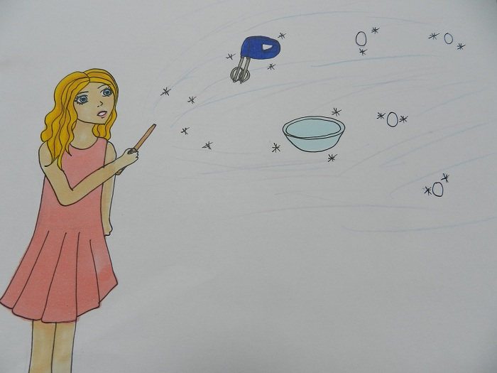
Nachdem wir uns alle beruhigt hatten, füllte ich den Teig in die
gefettete und bemehlte Form und schob diese in den vorgeheizten
Backofen. Nach 35 – 40 Minuten war es dann endlich soweit. Wir
öffneten die Form und hatten ein wunderschönes Lamm vor uns liegen.
Am Nachmittag, als mein Dad dann zu Hause war, berichteten wir
bei Kaffee, Milch und einem Stück Osterlamm von dem ereignisreichen
Tag.
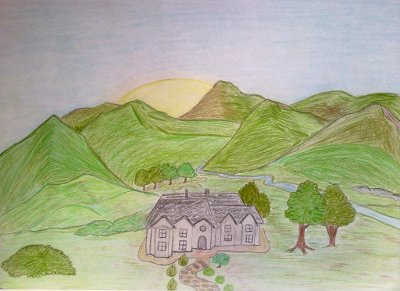
Samuel Israel Scrouse war ein alter Zauberer, der seinen
Lebensabend auf dem Familienanwesen "Scrouse Manor" verbrachte. Das
Anwesen lag in einem kleinen Tal, welches umgeben von Bergen und somit
von außen nicht einsehbar war. Scrouse Manor gehörte zu dem kleinen
schottischen Ort Beauly in den Highlands. Samuel war der einzige
Zauberer in der Gegend und obwohl die Dorfbewohner nichts über seine
Fähigkeiten wussten, ließen sie ihn bei jeder Gelegenheit spüren, was
sie von solchen absonderlichen Menschen hielten, die alleine auf einem
großen Anwesen ohne viel sozialen Kontakt lebten. Besonders die
Erwachsenen zeigten ihre Abneigung ganz deutlich. Immer wenn er sich
im Dorf aufhielt, um dort alltägliche Besorgungen zu machen, mieden
sie ihn. Manchmal sah er sie über ihn tuscheln und er hörte wie sie
ihn als "Freak" bezeichneten.
Obwohl ihn das sehr schmerzte, immerhin hatet er den Leuten von
Beauly nie etwas zu Leide getan, blieb er weiter auf dem
Familienanwesen wohnen. Dafür gab es einen Grund: Die Kinder des
Ortes.
Die Kinder waren die einzigen, die ihn nicht wie einen
Sonderling oder Freak behandelten. Ja, sie fanden ihn sogar sehr
interessant und sie besuchten ihn oft. Er liebte die Gesellschaft der
Kinder und die Kinder liebten sein Haus mit dem großen parkähnlichen
Garten und natürlich seine Geschichten, die er vor allem in den
Wintermonaten vor dem Kamin erzählte. Samuel hatte viele Geschichten
zu erzählen. Hauptsächlich waren es Geschichten über Hogwarts und über
sein altes Haus Gryffindor, welche er den Kindern natürlich als frei
erfundene Geschichten verkaufte. Jedoch sah er in ihren Augen, vor
allem bei den jüngeren Kindern, dass sie ihm die Geschichten glaubten
und sie als real einstuften.
So verging der Winter und langsam begann es Frühling zu werden.
Bald stand schon Ostern vor der Tür und Samuel hatte sich zu dem Fest
etwas ganz Besonderes einfallen lassen. Er wollte, mithilfe seiner
Hauselfen, Ostereier und Schokoladenhasen auf dem Anwesen verstecken.
Jedes der Kinder bekam dann am Ostersonntag einen kleinen Korb, um die
gefunden Süßigkeiten hineinzulegen. Anschließend wollten sie noch ein
wenig, bei Kakao und Osterbrot, zusammen sitzen und einen schönen
Nachmittag verbringen.
Die Karwoche verging für ihn viel zu langsam. Er hatte bereits
Mitte der Woche alles für das Eiersuchen vorbereitet und wartete
seitdem ungeduldig auf den Ostersonntag.
Endlich war der Ostersonntag da!
Samuel stand schon sehr früh auf und nachdem er die Eier und die
Osterhasen versteckt hatte, begann er den Tisch für den
Nachmittagskakao zu decken. Sie hatten nicht mehr viel Zeit, da er die
Kinder bereits für 10.30 Uhr hierher bestellt hatte.
Als es dann an der Tür klopfte, erschrak er zuerst, begann dann
aber zu lächeln. Das konnten nur die Kinder sein, dachte er sich und
ging gutgelaunt vom Esszimmer in den Salon, wo sich die Eingangstür
befand.
Doch als er seine Besucher vor der Tür stehen sah, erstarb sein
Lächeln.
Es waren zwar alle Kinder gekommen, doch sie hatten ihre Eltern
mitgebracht und diese schauten ihn jetzt grimmig an.
"Sie haben also unsere Kinder zum Eiersuchen eingeladen,
richtig?", fragte eine Mutter, die etwas weiter hinter stand.
"äh, ja, schon." Antwortete er und schaute in die unfreundlichen
Gesichter der Eltern.
"Hören Sie, ich weiß wirklich nicht was Sie wollen. Ich wollte
Ihren Kindern nur eine Freude machen. Wenn Ihnen das nicht passt, dann
verlassen Sie am besten mit Ihren Kindern mein Grundstück", sagte er
laut und knallte ihnen die Tür vor der Nase zu.
Wütend wand er sich ab und ging zurück ins Esszimmer. Dort ließ
er sich auf einen Stuhl fallen und vergrub sein Gesicht in den Händen.
"Was ist los, Meister Samuel?"
Samuel blickte auf und sah in die großen Augen seiner Hauselfe
Polly, die etwas beschämt vor ihm stand.
"Ach, Polly. Die Eltern der Kinder sind ebenfalls gekommen und
haben mich beschimpft", erklärte er seiner Elfe.
"Diese erwachsenen Muggel sind immer so gemein", erwiderte Polly
und ballte ihre kleine Hand zur Faust.
"Na ja, sie haben Angst. Die Leute haben immer Angst vor Sachen,
die sie nicht verstehen."
Samuel sah wie Polly ihre Augen ein wenig zusammenkniff, sich
dann aber umdrehte und in der Küche verschwand. Anschließend vergrub
er wieder sein Gesicht in den Händen, um die Tränen zu verdecken, die
gerade in ihm hochstiegen.
Plötzlich riss ihn ein neuerliches Klopfen aus seinen Gedanken.
Er überlegte ob er überhaupt noch aufmachen sollte, doch als es ein
zweites Mal klopfte, entschied er sich doch an die Tür zu gehen.
Wie erwartet standen draußen die Eltern mit den Kindern. Doch
dieses Mal blieben die Kinder nicht draußen stehen, sondern liefen
einfach ins Haus. Samuel konnte nur noch schnell zur Seite springen,
um nicht umgerannt zu werden.
"Also, ähm...", begann einer der Erwachsenen zu sprechen,
"...wir haben jetzt noch mal mit unseren Kindern geredet und sie
wollten unbedingt hier bei Ihnen Ostereier suchen... und na ja, sie
haben sich nicht davon abbringen lassen, verstehen Sie? Also wenn es
Ihnen nichts ausmacht, könnten die Kinder dann bei Ihnen bleiben?"
"Wissen Sie was? Warum bleiben Sie nicht auch einfach hier. Dann
können Sie sich davon überzeugen, dass ich keine schlechten Absichten
mit Ihren Kindern habe", schlug Samuel vor.
"Meinen Sie wirklich?"
"Ja, das ist doch gar kein Problem."
Samuel trat einen Schritt zur Seite und ließ die Eltern ins
Haus.
Schmunzelnd beobachtete er, wie sie sich etwas unsicher
umschauten. Doch als sie ins Esszimmer kamen, den gedeckten Tisch
sahen und draußen ihre Kinder, wie sie so viel Spaß beim Eiersuchen
hatten, tauten sie etwas auf. Sie setzten sich auf einen freien Platz
und beobachteten ihre Sprösslinge. Nach und nach begannen sie sich
auch untereinander zu unterhalten und bezogen sogar Samuel mit in ihr
Gespräch ein.
Es wurde ein wirklich schöner Ostersonntag.
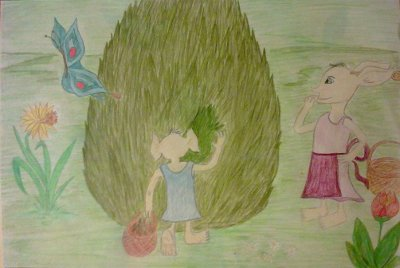
Im Laufe der nächsten Wochen lernten die Erwachsenen Samuel
besser kennen. Und nachdem sie ihre Vorurteile gegenüber ihm abgelegt
hatten, behandelten sie ihn wie ein vollwertiges Mitglied der
Gemeinde. Ja, man könnte schon fast sagen, sie behandelten ihn wie
einen Freund.
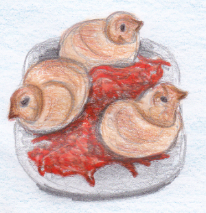
Zutaten: (für 8 Stück)
125 ml Milch
325 g Mehl
½ Würfel Hefe
40 g weiche Butter
1 Prise Salz
50 g Zucker
16 Rosinen
1 Eigelb (Größe M)
Zubereitung:
Die Milch erwärmen, bis sie lauwarm ist. Die Hefe darin
auflösen. Mehl in eine Schüssel sieben. In die Mitte eine kleine Kuhle
drücken und darin die erwärmte Hefemilch geben. Alles zu einen Teig
kneten. Den Teig ca. 15 Min in einem warmen Ort gehen lassen. Butter,
Salz und Zucker zum Teig geben und alles zu einer glatten Masse
verarbeiten. Alles nochmals 30 Min gehen lassen. Nun den Teig zu einer
langen Rolle formen und in 8 gleichgroße Stücke (jedes ca. 70 g)
schneiden. Die Stücke zu einer Rolle rollen und daraus einen Knoten
formen. Aus der einen Knotenhälfte einen Schnabel formen. Zwei Rosinen
als Augen in die Hälfte drücken. Das andere Ende als Schwänzchen 3-4
mal einschneiden. Eigelb mit etwas Wasser verrühren und die Küken
damit bestreichen. Auf ein mit Backpapier belegtes Blech legen und im
vorgeheizten Backofen bei 200 °C Umluft: 175 °C Gas: Stufe 3 für 15 -
20 Min backen. Küken herausholen und abkühlen lassen.
Zubereitungszeit: ca. 30 Min + 45 Min Wartezeit (zum Gehen des
Teiges)
Am Karfreitag, welcher traditionell immer der Freitag direkt vor
Ostern ist, wird von Christen an den Tod Jesus Christus am Kreuz
gedacht und er gehört zusammen mit Ostern zu den höchsten Feiertagen
in der christlichen Religion. Zusammen mit Christi Himmelfahrt
und Pfingsten symbolisieren diese Feiertage den Sieg über unter
anderem den Tod und auch die Hölle. Der Name leitet sich vom
althochdeutschen kara ab, was so viel wie Trauer, Kummer oder
auch Klage bedeutet.
Bekannt ist Karfreitag auch unter den Namen Stiller Freitag, Hoher
Freitag oder Guter Freitag, wobei letztere Bezeichnung von
Martin Luther eingeführt wurde.
In der katholischen Kirche gehört der Karfreitag zum sogenannten Tridum
Sacrum, zu welchem auch der Gründonnerstag (Tag vor Karfreitag) und
die Feier in der Nacht von Karsamstag auf Ostersonntag gehören.
Karfreitag gehört noch mit zur Fastenzeit und wird als sehr strenger
Fasttag angesehen, so wird an diesem Tag zum Beispiel traditionell
kein Fleisch gegessen. In den Gottesdiensten gibt es keine Feier der
Sakramente. Der Hauptgottesdienst an diesem Tag trägt den Namen Feier
vom Leiden und Sterben Christi und besteht aus einem
Wortgottesdienst, der Verehrung des Heiligen Kreuzes und aus der
Kommunionfeier. Dieser Gottesdienst beginnt traditionell um 15 Uhr,
dem Sterbedatum von Jesus, und die dominierende Farbe ist rot, als
Symbol für das vergossene Blut. Besonders wichtig ist während des
Hauptgottesdienstes auch die Verlesung der Passionsgeschichte sowie
die Nicht-Benutzung von Glocken und Schellen. Stattdessen kommen
Holzratschen zum Einsatz. In anderen Kirchen, wie der protestantischen
oder den Ostkirchen gibt es abweichende Traditionen und Bräuche, aber
der Hintergrund - der Tod von Jesus Christus - bleibt gleich. Neben
den Gottesdiensten gibt es in vielen Orten auch Passionsprozessionen,
bei denen ein großes Holzkreuz durch die Stadt getragen und somit der
Leidensweg Jesus nachgestellt wird.
Die Handhabung des Karfreitags als gesetzlicher Feiertag ist
hingegen nicht überall gleich geregelt. Während er in Deutschland und
im überwiegenden Teil der Schweiz als gesetzlicher Feiertag
eingerichtet ist, haben in österreich nur bestimmte Menschen frei, wie
zum Beispiel evangelische Christen oder Altkatholiken. Für alle
anderen ist es ganz normaler Arbeitstag. Auch in Luxemburg ist
Karfreitag kein gesetzlicher Feiertag. In Deutschland gilt darüber
hinaus Tanzverbot und ein Verbot öffentlicher Veranstaltungen, die
gegen den Ernst des Tages verstoßen. So bleibt zum Beispiel die Kirmes
in Bremen geschlossen und Theater und Opern passen den Spielplan
entsprechend für diesen Tag an.
Heute war wieder einer dieser Tage, wo ich denke, warum mache
ich das überhaupt. Du stehst auf, schaust in den Spiegel, schmeißt
dir Wasser ins Gesicht, ziehst deine Kleidung an, heftest das
Namensschild mit der Aufschrift „Adessok, Schadensbewerter 1. Klasse“
an deine Kleidung und gehst zum Tatort.
Ungewöhnlicher Tatort, ungewöhnliche Begleitumstände und vor
allem: ungewöhnliche Schadensermittlung und -regulierung.
Tatort:
Gringotts
Begleitumstände:
Der die Hochsicherheitsverliese bewachende Drache erlitt aus
noch nicht restlos geklärten Gründen einen Tobsuchtsanfall und floh
durch das Dach. Vorher beschädigte er noch einige umliegenden
Verliese. Bei der Kontrolle der Schäden im Verlies derer von
Lestrange wurde eine eigenartige Substanz aus einem Verlies im
Nachbarkorridor entdeckt. Diese Substanz war anscheinend durch die
Hitze flüssig geworden und unter der Tür hindurchgeflossen und
hatte sich nach dem Abkühlen wieder verfestigt. Chemische
Laboranalysen ergaben eine Substanz, die unter dem Namen „scrambled
eggs“ allgemein bekannt war.
Nach Durchsicht der alten Unterlagen ergab es sich, dass hier
eines der ältesten Verliese von Gringotts beschädigt war; der
damalige Erstunterzeichner wurde mit Lepus Paschalis angegeben.
Schadensermittlung:
Nachdem Lepus Paschalis endlich informiert worden war,
sandte er einen Abgesandten nach Gringotts, der sich den Schaden
besah und für die weiteren Verhandlungen alle Vollmachten hatte.
Lepus P. machte vor allem geltend, dass in diesem Verlies der größte
britische Umschlagplatz für easter eggs gewesen sei. Diese würden in
XXXX (Name gestrichen) eingesammelt, in Gringotts gelagert, in YYYY
(Name gestrichen) aufbereitet, in ZZZZ (Name gestrichen) gefärbt und
dann über alle Grafschaften verteilt werden. Ersatzeggs seien nicht
mehr zu beschaffen, da momentan Hochsaison sei.
Von Drachen, Eiern und klebrigen Vögeln
Aufgrund der Komplexität wurden leider insgesamt vier
Schadensbewerter mit dem Fall betraut. Der Vertreter von Lepus P.,
der Vertreter der Bank (also ich), der Vertreter der Bankenaufsicht
des ZM und der Vertreter der Drachengemeinschaft (glücklicherweise
kein Drache!).
Nach umfangreichen Verhandlungen wurde ein Kompromiss
erarbeitet: Statt einer bestimmten Summe Galleonen wurde eine 1 zu 1
Umsetzung von easter eggs zu surprise eggs der Firma Fred &
George Weasley Ltd. festgesetzt, damit auch die britischen Kinder zu
Ostern nicht leer ausgehen.
Kaum war der Kompromiss gefunden und schriftlich festhalten,
traten weitere Akteure auf den Plan. Die Vertreter der Inhaber
weiterer Hochsicherheitsverliese waren überraschend erschienen, um zu
prüfen, inwiefern auch ihre im Umfeld liegenden Verliese beschädigt
worden waren. Dazu gehörten auch Vertreter der Hogwartschen Häuser.
Die von Prof. Flitwick beauftragte Person legte sogleich ihr Veto
ein, da sie befürchtete, dass die durch eine scheinbar
undurchschaubare Schadenserstellung festgelegte Summe einen noch gar
nicht feststehenden Schaden ihres Hauses nicht mehr decken könne.
An die weiteren sich nun verkomplizierenden Verhandlungen
möchte ich lieber nicht erinnert werden, aber schließlich einigte man
sich mehrheitlich auf eine schnelle Regulierung.
Als zusätzliches Bonbon für die auf die wahren easter eggs
verzichtenden Kinder wurde von Weasley Ltd. garantiert, dass in jedem
7. Ei nun ein kleines Fondantnest oder ein Geleevogel beigelegt
wurden.
Fondantnester, Geleevögel?? Na, ja wer’s mag! Ich jedenfalls
mag solche süßklebrigen Dinge nicht und Tage wie diesen schon gar
nicht. Wenn das so weitergeht, dann brauche ich trotz Fastenzeit noch
ein großes Glas des Lieblingsgetränkes für harte Kobolde: Eierlikör!
„Lieber Osterhase, wie geht es dir? Du wunderst dich bestimmt,
dass ich dir schreibe. Ich finde es einfach unfair, dass der
Weihnachtsmann jedes Jahr einen Haufen Briefe von allen Kindern (und
auch Erwachsenen) erhält und du jedes Mal leer ausgehst. Ich hoffe,
ich kann dich also dieses Jahr mit einem kleinen Brief von mir
erfreuen.
Wenn man dem Weihnachtsmann einen Brief schreibt, geht es
meist darum, was man sich wie sehr zu Weihnachten wünscht. Der gute
Mann darf sich dann die erstaunlichsten Wünsche durchlesen und sich
überlegen, wie er sie erfüllt bekommt. Letztes Jahr zum Beispiel, da
hat sich mein kleiner Bruder eine Reise in einem Space-Shuttle zum
Mond von ihm gewünscht. Ganz ehrlich, wäre ich der Weihnachtsmann,
hätte ich mich schon längst selbst vom Dienst suspendiert...
Aber nun zu dir, guter Osterhase. Keine Angst, ich werde mir
meine unerfüllbaren Wünsche sparen und dir einfach nur erzählen, wie
meine Familie und ich uns auf Ostern freuen.
Da fällt mir ein, ich hab mich ja noch gar nicht vorgestellt!
Ich heiße Millie und bin 11 Jahre alt. Ich lebe mit meinen Eltern in
so einem kleinen Haus mit Efeu-Ranken an der Hauswand. Im Winter
existieren diese Efeuranken natürlich nicht, aber jetzt, wo der
Frühling endlich wieder kommt und die Sonne sich mit ihren Strahlen
so sehr anstrengt, jetzt kann man die grünen Dinger wieder sehen.
Auch sonst sieht man bei uns im Garten schon ein paar andere
Pflanzen, die sich alle Mühe geben, ihre Hälse endlich wieder aus
der Erde hervor zu strecken. Ich mag dieses Gefühl, wenn es endlich
wieder etwas wärmer wird. Wenn die Sonnenstrahlen einem ein
kribbeliges Gefühl auf der Haut machen. Wenn der blaue Himmel einem
regelrecht ins Gesicht lacht.
Gestern brauchte ich nicht mal mehr meine Jacke anzuziehen, es
war auch so schon warm genug. Meine Mama sagt, der Frühling kommt
bald. Meine Familie –“
„Was schreibst du denn da die ganze Zeit?“
Mein kleiner Bruder. Ich hätte es ahnen müssen.
„Einen Brief.“, antwortete ich knapp und versuchte, mich durch
seine Anwesenheit nicht komplett vom Schreiben ablenken zu lassen.
Gerade wollte ich zu einem neuen Wort ansetzen...
„Einen Brief? An wen denn?“
Ich knurrte. „Was geht es dich an, hast du nicht irgendwas
anderes zu tun? Lego bauen, komische Bilder malen oder Mama auf die
Nerven gehen?“ Genervt sah ich ihn endlich an. Er machte ein
unglückliches Gesicht. „Nie sagst du mir, was du machst. Immer frag
ich nach und denk, ich erkundige mich mal und du …“ „Ist ja schon
gut!“, ich seufzte, „ich schreibe an den Osterhasen.“
Er machte große Augen. „Wirklich?“ Er überlegte kurz. Über
seinen verwirrten Ausdruck musste ich nun doch grinsen. „Meinst du,
er antwortet? Der Weihnachtsmann ist da ja eher etwas zurückhaltend.“
Da musste ich ihm recht geben. „Ich versuch es einfach mal.“
Ich wandte mich wieder meinem Brief zu. Jonas schielte zwar
noch einige Zeit auf meinen Zettel, doch irgendwann schien ihn mein
konzentriertes Schreiben zu langweilen und er verzog sich.
Meine Familie ist gerade dabei, das Haus ein wenig zu
dekorieren und alles sauber zu machen. Oder viel mehr, Mama macht
alles sauber, dekoriert und hält uns ganz schön auf Trab. Heute hat
sie mir allein drei Mal gesagt, dass ich mein Zimmer aufräumen soll.
„Frühjahrsputz“ nennt sie das. Wenn sie mal nachgesehen hätte,
wüsste sie, dass das längst erledigt ist. Eltern.
Jonas und ich wollen morgen Eier bemalen. Du weißt bestimmt,
wie das geht oder? Schließlich liegen jedes Mal ein oder zwei
angemalte Hühnereier mit in meinem Osterkorb, wenn ich suchen gehen
darf. Ich finde, du gibst dir sehr viel Mühe. Ich mag die Eier gar
nicht essen, weil sie so schön aussehen, aber Papa sagt immer, die
werden sonst schlecht. Die Schoko-Eier finde ich natürlich auch
nicht schlecht. Wer sagt schon nein zu Schokolade? Ich jedenfalls
nicht.
An Ostersonntag kommen wieder Tante Anne und Onkel Herbert zu
besuch. Ich mag Ostern. Ganz ehrlich. Aber wenn Anne sich nicht bald
was Besseres einfallen lässt, als mir jedes Mal in die Wange zu
zwicken, wenn sie mich sieht und zu rufen: „Du wirst immer
erwachsener!“, dann überlege ich mir mal was. Zur Not zwicke ich ihr
auch in die Wange und rufe: „Tante Anne, du wirst immer älter!“
Onkel Herbert ist schwer in Ordnung. Er sagt nur etwas, wenn
es wirklich wichtig ist. Oder wenn wir an Winterabenden gemeinsam
vor dem Kamin sitzen. Dann kann er ganz tolle Geschichten erzählen.
Aber ich bin auch nicht traurig, dass der Winter nun bald vorbei
ist.
Lieber Osterhase, ich muss dir jetzt etwas sehr Trauriges
erzählen. Ich schiebe es ja doch nur vor mir her. Ich glaube, du
bist alt genug, um es zu erfahren. Vorweg möchte ich sagen, dass ich
damit nichts zu tun hab, sondern dass es nur die Idee meiner Eltern
ist. Jedes Jahr an Ostern isst meine Familie einen Hasen! Wenn es
ein Kollege von dir ist, tut mir das sehr Leid. Ich rühre von seinem
Fleisch keinen Bissen an, schließlich sind auch genug Kartoffeln,
Rotkohl und Nudeln da. Bist du jetzt sehr enttäuscht von ihnen? Ich
hoffe du nimmst es meiner Familie nicht übel und bringst Jonas
trotzdem noch ein paar Eier. Sie wissen es einfach nicht besser.
Am letzten Sonntag war ich übrigens mit meiner Mutter in der
Kirche. Sie findet es richtig, an Ostern dann auf jeden Fall auch in
die Kirche zu gehen, sie meinte an diesen Tagen muss man besonders
an Jesus denken.
Der Pastor hat etwas davon erzählt, dass dieser Jesus am
„Karfreitag“ gekreuzigt wurde und dass er das nur für uns erlitten
hätte. Es ging um viele „Süden“ und so. Ich dachte immer, es gäbe
nur einen Süden. Ich hab das alles nicht so richtig verstanden, das
schien eine ziemlich große Sachen zu sein. Kanntest du Jesus? Kannst
du mir von ihm erzählen, wenn du mir zurück schreibst?
Ich hoffe sehr, dass du antwortest, ich bekomme so gerne Post
und der Weihnachtsmann ist sehr schreibfaul.
Wie du siehst, ist Ostern für uns schon ein sehr besonderes
Fest. Ich hoffe, du fühlst jetzt wieder, dass deine Arbeit sehr
gewürdigt wird. Am meisten freue ich mich natürlich aufs Ostereier
suchen!
Ich freue mich auf dich!
Deine Millie.
PS: … Wenn ich doch einen klitzekleinen Wunsch äußern könnte …
Meine Lieblingsschoko-Eier sind die mit Nougat …
Sorgfältig faltete ich meinen Brief zusammen. Jetzt musste ich
nur noch überlegen, wie der Osterhase den Brief erhalten würde. Ich
brauchte nicht lange nachzudenken, es war sonnenklar: Der Osterhase
kam wie alle anderen Hasen aus dem Wald. Er lebte ja dort und wenn
nicht Ostern war, hatte er ein sehr friedliches Leben zwischen den
Bäumen. Schnell zog ich mir meine Frühlingsjacke über und stiefelte
hinüber zu unserem kleinen Fichtenwald am Rande der Stadt. Mit
klopfendem Herzen steckte ich den Brief zwischen ein paar Grasbüschel
neben eine große Fichte. Ich betrachtete den kleinen weißen Fleck
noch eine Weile und ging dann zurück ins Haus.
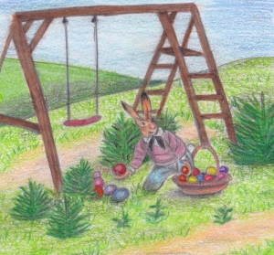
Es war Ostermorgen. Der Himmel war blau und die Sonne strahlte
ihr schönstes Gelb auf die Welt hinab. Neugierig und sehr aufgeregt
stand ich mit meinem kleinen Bruder Jonas in unserem Garten. Jeder
von uns hielt ein kleines Körbchen in der Hand. „Drei … Zwei … Eins …
Los!“, rief meine Mutter und ich stürmte dicht gefolgt von Jonas in
den Garten hinein. Jeder Stein wurde um gedreht, jeder Grashalm zur
Seite gebogen – ich hätte Sherlock Holems Konkurrenz gemacht!
Schließlich, ganz verborgen hinter unserer Schaukel fand ich es: Mein
Osternest.
„Ich hab es, ich hab es!“, jubelte ich und als ich mich
hinkniete, um meinen Fund zu bewundern, staunte ich nicht schlecht:
Unter den anderen Schoko-Eiern und den bemalten Hühner-Eiern fand ich
einen riesigen Haufen an lila eingepackten Nougat-Eiern.
Zufrieden lächelte ich. Ich hatte gewusst, dass mich der
Osterhase nie enttäuschen würde.
Die Sonne stand schon am Horizont und tauchte alles in helles
Licht. An der peitschenden Weide sproßen erste grüne Blätter und
kleine Schneeglöckchen gruben sich langsam durch die Erde an die warme
Oberfläche. Das gigantische Schloss spiegelte sich im türkis-blau
gefärbten See, was die Szene noch idyllischer machte.
Eben hatten die Frühlingsferien für die Schüler von Hogwarts
begonnen, am nächsten Tag war Ostersonntag. Ein kleiner, betrübt
wirkender Hauself stand am Fenster in einer der runden Wendeltreppen,
hoch im Nordturm, sah hinaus und beobachtete die aufgehende Sonne. Die
anderen Hauselfen waren bereits an der Arbeit, doch er brauchte nicht
schon um sechs Uhr morgens aufzustehen und zu schuften. Denn Dobby war
frei. Professor Dumbledore hatte ihm sogar versprochen ihn zu
bezahlen, worüber Dobby sehr glücklich war. Nun machte ihm aber etwas
anderes Sorgen. Winky, die ehemalige Hauselfe von Mr. Crouch war noch
immer am Boden zerstört und ließ nicht mit sich reden. Er beschloss,
sie aufzumuntern, wie auch immer er das anstellen wollte. Nach einem
weiteren kurzen Blick hinaus in die zauberhaften Ländereien Hogwarts,
apparierte er hinunter in die Küche, um nach Winky zu sehen.
Sie stand am Herd und wimmerte leise in einen Haufen
Geschirrtücher. Als sie Dobby bemerkte, der traurig zu ihr sah, hob
sie ihren Kopf und schaute ihn mit großen, tränengefüllten Augen an,
bevor sie sich wieder auf die Tücher zurücksinken ließ. Sie machte
einen so armseligen Eindruck, dass Dobby am liebsten zu ihr
hingegangen wäre und sie in seine kleinen Arme genommen hätte. Doch da
sie schon bei der Andeutung eines Gesprächs zurückzuckte, ließ er es
lieber bleiben. Plötzlich sah Winky erschrocken hoch und wuselte zum
Herd zurück.
„Winky muss arbeiten.“, sagte sie leise und immer wiederholend
zu sich selbst. „Mr. Crouch würde wollen, dass Winky arbeitet. Aber
Mr. Crouch …“ Sie zuckte erneut zusammen, als würde plötzlich die
Erinnerung an ihren alten Herr wieder hochkommen und begann wieder
jämmerlich zu weinen, ihre Hand um die große Whiskeyflasche
geklammert.
„Winky soll das Zeug nicht trinken.“ Dobby sah sie vorwurfsvoll
an und nahm ihr die Flasche aus der Hand. „Es ist nicht gesund für
Winky.“ Die Hauselfe sah ihn ausdruckslos an. Dobby seufzte leise.
Zur gleichen Zeit saßen Harry, Ron und Hermine im
Gemeinschaftsraum der Gryffindors. Hermine brütete über einem Stapel
Geschichte der Zauberei Notizen, während Harry und Ron eine Runde
Snape explodiert spielten, neben ihnen die Zaubertränke Hausaufgaben
liegend. Immer wieder grüßten ein paar Schüler sie, die zur Großen
Halle hinuntergingen. Nicht alle waren in Hogwarts geblieben, doch
waren es im Vergleich zum letzten Jahr recht viele.
Gerade als Rons Kartenstapel explodierte, Ron hustend hinter
dunklem Rauch auftauchte und Hermine ihm einen empörten Blick zuwarf,
hörten sie einen lauten Knall.
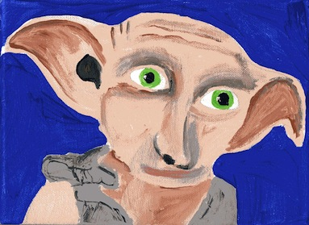
„Dobby!“, rief Harry erschrocken aus. Der Elf blickte
entschuldigend zu ihm hoch.
„Dobby wollte Harry Potter nicht erschrecken.“ Hermine und Ron
tauschten einen leicht belustigten Blick.
„Nein, schon in Ordnung. Was gibt’s?“, fragte Harry und setze
sich zurück auf seinen Sessel.
„Dobby hat gehofft Harry Potter könnte ihm helfen. Winky geht es
immer noch sehr schlecht. Sie spricht nicht mit Dobby und trinkt immer
noch sehr viel von diesem Zeug. Dobby ist sehr traurig deswegen. Er
möchte Winky so gerne aufmuntern.“ Er sah mit großen Augen zu den
dreien hoch.
„Äh … ja und was genau sollen wir jetzt tun?“, fragte Ron, der
versuchte sich ein Grinsen zu verkneifen.
„Wir sollen ihm helfen, Winky aufzumuntern“, antwortete Hermine
ungeduldig, aber erfreut über die Aufgabe, etwas für die arme, kleine
Elfe tun zu können.
„Ahhh so“, machte Ron verständnislos. Dobby trat nervös vom
einen Fuß auf den anderen.
„Winky möchte immer noch nicht frei sein. Sie will nichts von
Kleidung wissen, auch wenn Dobby ihr so oft gesagt hat, wie schön es
ist, frei zu sein. Dobby ist verzweifelt. Was soll er tun, um Winky zu
zeigen, dass es noch anderes gibt, als nur zu arbeiten?“, fuhr Dobby
fort, als keiner der drei Anstalten machte, etwas Sinnvolles in das
Gespräch einzubringen.
„Die arme Winky“, seufzte Hermine.
„Sag mal Dobby, musst du noch immer den ganzen Gryffindor
Gemeinschaftsraum alleine putzen?“, wollte Harry plötzlich wissen, da
ihm Hermines Hüte und Socken wieder eingefallen waren.
„Ja, leider“, sagte Dobby traurig, „die anderen halten es für
eine Beleidigung, dass hier überall die Kleidungsstücke herumliegen,
die Miss Granger gemacht hat.“ Er machte einen Knicks in Richtung
Hermine. Ron sah währenddessen noch immer abwesend aus dem Fenster,
wenig am Gespräch beteiligt.
„Das tut mir Leid, Dobby.“
„Dobby macht das gerne, Miss“, piepste er.
„Ich hab Hunger“, ließ Ron plötzlich verlauten, was ihm einen
wütenden Blick von Hermine bescherte. „Ich hoffe, Mum macht dieses
Jahr wieder diese Ostereier.“
„Was –“, setzte Hermine an, doch Harry unterbrach sie.
„Wart mal … Hunger … Dobby, wie wärs denn wenn du Winky ein
Schokoladenosterei machst? Es ist keine Kleidung, also muss sie es
wohl annehmen … Und wer hat keine Freude an Schokolade?! Na, was
meinst du?“
„Ja, das könnte Dobby …“, sagte er langsam. Dann strahlte er die
drei an. „Dankeschön Harry Potter!“
„Nichts zu danken. Du hast noch was gut bei mir Dobby …“ Harry
senkte die Stimme. „Du weißt schon, wegen dem Dyanthuskraut.“
Dobby blickte noch einmal lächelnd hoch, die großen Augen auf
Harry gerichtet und seine Fledermausohren wippten vor Begeisterung hin
und her. Mit einem KNALL disapparierte er.
„Woow, sagt mal, was war denn das?“, fragte Ron verdutzt.
Erst als alle Elfen ihre Arbeit erledigt hatten, die Schlafräume
der Hogwarts Schüler aufgeräumt und geputzt waren, das Geschirr
abgewaschen und bereits das Frühstück für den nächsten Tag vorbereitet
hatten, und alle sich schlafen gelegt hatten, schlich sich Dobby
wieder in die Küche. Vorhin hatte er noch einmal probiert mit Winky zu
reden, aber sie wiederholte nur ständig, sie sage nichts, solange sie
nicht wieder zu Mr. Crouch könne. Er hatte dafür gesorgt, dass sie
ohne den Berg Lumpen und die große, durchsichtige Flasche ins Bett
ging. Jetzt holte er aus einem der oberen Schränke Schokolade, Milch,
Caramel und eine Form, in die er das Osterei gießen wollte. Er fand
die Idee gut und war froh, dass Harry Potter ihm geholfen hatte –
obwohl er sich erstmals gar nicht getraut hatte, zu ihm zu gehen. Aber
dafür sind Freunde doch da, sagte er sich. War Harry Potter denn sein
Freund? Der Gedanke daran, einen Freund zu haben, machte ihn so
glücklich, dass er um das Doppelte schneller arbeitete. Er brauchte
ganze zwei Stunden, doch am Ende war er zufrieden mit seiner Arbeit.
Er wickelte, das Schokoladenei in buntes Papier und band eine Schleife
drum.
Im Morgengrauen dann, als die ersten Sonnenstrahlen durch die
Fenster Hogwarts schienen und sich erst ein paar Schüler aus ihren
Betten räkelten, apparierte Dobby mit dem Ei auf das Schlossgelände
hinaus und versteckte es hinter einem Busch mit rosafarbenen Blüten.
Die Hauselfen waren schon alle wach und werkelten in der Küche
herum, als Dobby zurückkam. Winky saß auf einem für sie viel zu hohem
Stuhl und knabberte an einer Brotrinde, während die anderen Elfen ihr
böse Blicke zuwarfen und tuschelten. Dobby ging langsam auf sie zu.
„Winky? Dobby hat eine Überraschung für dich“, piepste Dobby.
„Eine Überraschung? Für Winky?“ Zitternd sah Winky hoch.
„Ja. Winky muss nur mit Dobby mitkommen.“ Sie sah mit großen
Augen zu ihm hoch und war schon im Begriff von dem Stuhl runter zu
klettern, als sie plötzlich wieder erstarrte.
„Aber Winky hat keine Überraschung verdient. Winky ist eine
böse, schlechte Hauselfe“, wimmerte sie. Dobby hielt sie leicht an der
Schulter.
„Nein, das ist Winky nicht. Dobby weiß das. Und Winky kann Dobby
vertrauen“, sagte er ernsthaft und half ihr vom Stuhl herunter. Dann
nahm er ihre Hand und apparierte mit ihr vor das Schlossportal, wo er
das große Schokoladenei versteckt hatte.
„Was tun wir hier?“, fragte Winky, während sie blinzelte, da ihr
die Sonne direkt ins Gesicht schien.
„Winky muss suchen“, erklärte ihr Dobby. Die kleine Hauselfe sah
verwirrt aus, gehorchte aber stumm. Sie bückte sich unter Sträucher,
sah hinter Bäumen nach und untersuchte selbst die winzigsten Blümchen.
Irgendwann fand sie das bunt verpackte Geschenk und sah zu Dobby hoch.
Als er aufmunternd nickte, begann sie das Papier abzuwickeln und
begutachtete das Ei.
„Was muss Winky damit machen? Soll sie es Dobbys Freund Harry
Potter bringen?“, fragte sie schüchtern.
„Nein, das ist für Winky!“, sagte Dobby strahlend.
„Ein … Geschenk … für Winky?“, fiepte sie aufgeregt und Dobby
nickte.
„Oh … danke.“ Ihre Augen schwammen in Tränen, als sie Dobby
anlächelte. Und Dobby wusste, er hatte den Bann zwischen ihnen mit dem
Geschenk gebrochen. Vielleicht war das ja sogar der Anfang einer
Freundschaft, dachte der Hauself glücklich.
Es ist ein lauer Montagmorgen, die ersten Sonnenstrahlen lassen
auf sich warten. Der Morgen ist noch nicht angebrochen, es ist noch
nicht Tag, aber auch nicht mehr Nacht. Draußen ist es noch dunkel.
Eine Frau ist auf dem Weg zum Grab von Jesus. Ihr Name ist Maria
Magdalena. Sie trägt eine Laterne mit sich, um auf dem steinigen Weg
nicht den Tritt zu verlieren. Nach einem mühevollen Weg gelangt sich
endlich an die Grabstätte. Dort stellt sie schnell fest, dass der
Stein, der das Grab verschließen soll, verschwunden ist – und auch der
Leichnam von Jesus liegt nicht mehr im Grab! Sie ist ganz aufgeregt
und weiß zunächst nicht, was sie machen soll. Zunächst sucht sie den
Leichnam.
Doch dann besinnt sie sich wieder. Sie läuft den Weg zurück in
die Stadt zu Simon Petrus, einem Jünger von Jesus. Aufgeregt berichtet
sie ihm und den anderen Jüngern, die Jesus vergötterten, von ihrer
Entdeckung. Sie sagt, dass der Leichnam von Jesus aus dem Grab
entfernt wurde – widerrechtlich. Sie habe ihn am Grab gesucht, aber
nicht gefunden. Petrus und die anderen Jünger sind fassungslos und
können die Geschichte nicht glauben. Doch sie wissen alle von den
vielen Wundern, die Jesus vollbracht hat. Gemeinsam machen sie sich
auf zum Grab, um sich von Maria Magdalenas Geschichte zu überzeugen.
Ein Jünger ist schneller als die anderen an der Grabstätte. Er
kommt am Grab an, vorsichtig nähert er sich ihm. Als er hineinblickt,
sieht er die Leichentücher, doch den Leichnam sieht er nicht. In das
Grab hineinzugehen traute sich der Jünger aber nicht. In diesem Moment
kommt Petrus an der Grabstätte an. Er ist furchtloser und geht in das
Grab hinein, auch er sieht die Leichentücher. Das Schweißtuch, das
Jesus um den Kopf gebunden trug, liegt jedoch nicht bei den
Leinentüchern. Es liegt daneben, an einem besonderen Ort. Nachdem er
sich umgesehen hat, verlässt Petrus die Grabstätte wieder. Er
berichtet den wartenden Jüngern von seinem unglaublichen Fund. Sie
sind sprachlos und können es nicht glauben. Der Jünger, der zuerst am
Grab angekommen war, betritt nun doch das Grab und findet Petrus
Behauptung bestätigt. Alle Jünger wissen nicht, was geschehen ist,
aber sie sind unerschütterlich in ihrem Glauben an Jesus und vertrauen
auf ihn. Sie verstehen aber noch nicht, dass Jesus von den Toten
auferstanden ist. Ratlos, aber immer noch als Gläubige, kehren sie
zurück in ihre Häuser.
Maria Magdalena, die die Jünger zum Grab begleitet hat, schafft
es noch nicht nach Hause zu gehen. Sie steht vor dem Grab und weint.
In Tränen aufgelöst schaut sie in das leere Grab und erblickt zwei
Engel. Sie tragen weiße Kleider, ein Engel sitzt am Kopf, wo Jesus
Leichnam gebettet worden war, einer am Fußende. Die Engel sprechen zu
der aufgelösten Maria Magdalena. Sie fragen sie, warum sie weint.
Daraufhin entgegnet sie, dass Jesus, ihr Herr, ihr weggenommen wurde
und sie nicht weiß, wo er ist. Nachdem sie gesprochen hat, hört sie
ein Geräusch hinter sich und dreht sich um. Hinter ihr steht ein Mann.
Auch dieser fragt sie, warum sie weinen würde und wen sie in dem
leeren Grab suchen würde. Maria Magdalena hält ihn für einen Gärtner,
stattdessen ist es Jesus selbst! Maria Magdalena fragt ihn, wo er den
Leichnam von Jesus hingebracht hat. Sie will ihn sehen und wieder
zurück in seine ewige Ruhestätte bringen. Als Jesus Maria erneut
anspricht, erkennt sie ihn als ihren "Meister"! Auf Hebräisch erklärt
ihr Jesus, dass er noch nicht im Himmel ist. Sie solle weiterhin an
ihn und Gott glauben und auch seine Botschaft an alle Gläubigen
insbesondere an die Jünger weitergeben. Maria Magdalena hört auf zu
weinen, verlässt die Grabstätte und geht zurück in die Stadt. Dort
angekommen berichtet sie den Jüngern von ihrer Begegnung mit Jesus und
erzählt ihnen von seiner Botschaft.
Abends sitzen alle Jünger zusammen und unterhalten sich. Aus
Furcht vor den Juden haben sie ihre Türen verschlossen. Da tritt
plötzlich Jesus zu ihnen und spricht: "Friede sei mit euch!" Die
Jünger sehen sein unversehrten Hände und seinen Körper und freuen
sich. Sie sind glücklich darüber, dass Jesus wieder unter ihnen ist.
Jesus erklärt, dass er von Gott gesandt worden ist, um Gutes in der
Welt zu tun und den Glauben an das wahrhaft Gute zu bewahren. Nun sei
sein Werk getan und sie sollen es weiterführen. Mit dem Wissen und
ihrem Glauben sollen sie Sünden erlassen und Gutes tun.
Einer der zwölf Jünger, Thomas, genannt der Zwilling, war aber
nicht bei der Versammlung, als Jesus zu den Jüngern sprach. Er kommt
erst später hinzu. Aufgeregt und glücklich berichten ihm die anderen
von ihrer Begegnung mit Jesus und von seinen Worten. Thomas kann ihnen
aber nicht wirklich glauben. Er sagt, dass er ohne einen Beweis der
Kreuzigung nicht glauben könne, dass Jesus wirklich bei ihnen war. Die
anderen Jünger sind entsetzt, ratlos und wissen sich nicht zu helfen.
Nach einigen kurzen Gesprächen löst sich die Versammlung auf und jeder
Jünger geht seines Weges.
Am nächsten Dienstag versammeln sich wieder alle Jünger. Dieses
Mal ist auch Thomas mit dabei. Trotz der verschlossenen Türen steht
plötzlich wieder Jesus zwischen ihnen und spricht zu ihnen: "Friede
sei mit euch!" Anschließend spricht Jesus mit Thomas über seinen
Unglauben. Er solle nicht so ungläubig sein, sondern stattdessen einen
unerschütterlichen Glauben an ihn und Gott besitzen. Nun kann auch
Thomas an die Auferstehung von Jesus glauben, weil er ihn leibhaftig
gesehen hat. Jesus ist enttäuscht von Thomas. Er betont, dass
besonders die Menschen, die nicht etwas tatsächlich sehen und dennoch
glauben, die wahren Gläubigen sind.
Der Ostermontag gehört neben dem Pfingstmontag und dem 26.
Dezember zu einem der drei größten zweiten Feiertage. Ostern wird als
achttägiges Fest gefeiert, was bis zum folgenden Sonntag andauert.
Jeder Tag der Woche zählt als Hochfest; damit ein weiterer
Festgottesdienst innerhalb der Woche möglich ist, wurde der Montag als
zweiter Feiertag eingeführt.
Ein Feiertag, der gefeiert werden darf und meistens mit dem
Besuch der Verwandtschaft auch getan wird, denn mit Ostern endet
außerdem die 40-tägige Fastenzeit, die an die 40 Jahre des Volkes
Israel in der Wüste sowie an die 40 Tage die Jesus in der Wüste
verbrachte, erinnern soll.
Bis zum Anfang des 4. Jahrhunderts gab es keine einheitliche
Regelung, wann Ostern zu feiern ist. Das jüdische Passahfest, was
während der Wiederauferstehung Jesu stattfand und mit Ostern verbunden
ist, dauert 7 bzw. 8 Tage – von Kreuzigung bis Auferstehung sind es
allerdings nur drei. So kam es, dass Bischöfe und Äbte festlegten, ob
am Freitag, Samstag oder Sonntag die Wiederauferstehung gefeiert
werden sollte; nicht dem Montag.
Am Ostermontag wird dem Emmausgang gedacht, der auf ein in der
Bibel geschildertes Ereignis zurückzuführen ist, welches ein Tag nach
der Auferstehung Jesu Christi, also heute einem Tag nach Ostersonntag,
sich ereignete: Laut dem Lukasevangelium begaben sich zwei Jünger auf
den Weg von Jerusalem nach Emmaus. Auf dem Weg dorthin schloss sich
ihnen ein weiterer Mann an, der sie nach dem Grund ihrer Trauer fragte
und ihnen anschließend erklärte, dass der Messias all das erleiden
musste, was die alten Schriften vorhergesagt hatten. Die beiden Jünger
luden in Emmaus den Fremden ein. Erst als er am Tisch das Brot brach,
erkannten sie in dem Mann den auferstandenen Jesus. Im selben Moment
verschwand er vor ihren Augen. Sie kehrten um nach Jerusalem, um dort
den anderen Jüngern und Anhängern Christi von ihrer Begegnung zu
erzählen. Ein daraus entstandener Ostermontagbrauch ist der
Emmaus-Spaziergang, der meist bei einer Pfarrkirche beginnt und an
einer Kapelle endet.
In Oberbayern in Traunstein wird der Ostermontag mit dem
berühmten Schwertertanz und Georgiritt gefeiert. Festlich geschmückte
Pferde und Wagen, historische Gruppen und Musikkapellen ziehen zur
Kirche und damit verbunden kommt es zu einem Schwertertanz, der
symbolisch den Winter vertreibt. Die alte Tradition ist eine Mischung
aus farbenfrohem Historienspiel, lebendigem Brauchtum und Bekenntnis
zum christlichen Glauben.
Ostersonntag fanden die Jünger bereits das leere Grab mit dem
zur Seite geschobenen Stein, doch die Gewissheit brachte ihnen erst
der Ostermontag, als Jesus den Jüngern erschien und ihnen die Zweifel
am Wunder nahm und die Botschaft der Auferstehung ihres Herrn
verkünden ließ.
Schwierigkeitsgrad:
einfach
Zubereitungs- und Backzeit:
ca. 45 Minuten
Backzeit:
15 Minuten
Ober-/Unterhitze:
etwa 180 °C
Heißluft:
etwa 160 °C
Zubereitung:
max. 2 Tage vor dem Genuss
Stückzahl:
je nach Größe 8 bis 15 Stück
Kalorien:
267 kcal pro Stück
Bei dem Rezept handelt es sich um ein Backrezept, das speziell
zum Backen mit Kindern geeignet ist. Dennoch sollte man die Kinder
dabei nicht unbeaufsichtigt lassen und ihnen bei schwierigen
Tätigkeiten unter die Arme greifen.
Zutaten für den Teig
1 Dose Aprikosenhälften (Abtropfgewicht 240 g)
150g Weizenmehl
2 TL Backin
100g Zucker
1 Päckchen Vanillin-Zucker
1 Päckchen geriebene Zitronenschale
100g Butter
1 Ei
4 EL Aprikosensaft (aus der Dose)
Zutaten für den Belag
200g kalte Schlagsahne
etwa 4 EL Aprikosensaft (aus der Dose)
1 Päckchen Quarkfein Zitrone
250g Speisequark
Zubereitung
Stelle die Zutaten bereit und lass die Aprikosen auf einem Sieb
abtropfen. Lege ca. 12 bis 15 Aprikosenhälften für die Dekoration zur
Seite und schneide die übrigen Aprikosen in kleine Würfel. Belege das
Backblech mit Backpapier und heize den Backofen vor.
Mische das Mehl mit dem Backin in einer Schüssel. Füge dann die
restlichen Zutaten außer die kleingeschnittenen Aprikosen hinzu.
Verrühre alles mit einem Handrührgerät zunächst kurz auf niedrigster,
dann 2 Minuten auf höchster Stufe zu einem glatten Teig. Hebe die
Aprikosenstücke mit einem Teigschaber kurz unter. Gibt nun den Teig
mit zwei Esslöffeln in Häufchen nicht zu dicht nebeneinander auf das
Backblech. Schiebe dann das Backblech auf mittlerer Einschubleiste in
den Backofen und backe es 15 Minuten.
Ziehe das Gebäck mit dem Backpapier auf einen Kuchenrost und
lass es erkalten.
Schlage die Sahne in einem Rührbecher mit dem Handrührgerät
steif. Verrühre in einer Rührschüssel den Aprikosensaft mit Quarkfein,
füge den Quark unter und rühre alles glatt. Hebe die Sahne vorsichtig
unter und verteile nun den Belag vorsichtig und gleichmäßig auf den
"Spiegeleiern" und streiche ihn mit einem Esslöffel etwas glatt. Gib
nun auf jedes "Spiegelei" eine Aprikosenhälfte.
Zum Servieren kann man die Spiegeleier auch gerne in eine
Bratpfanne setzen!
Die Sonne lacht so schön am Himmel, Kinder wachen mit einem
Lächeln auf. Der Frühling ist endlich gekommen.
Wärme breitet sich langsam über dein Gesicht, während du
draußen den Tag begrüßt.
Mutter und Vater sind zuvor früh aufgestanden, um den Kindern
eine Freude zu machen. Nun schauen überall im Garten
bunte Eier vorwitzig aus ihren Verstecken heraus.
Zunächst sitzen alle gemeinsam am Frühstückstisch. Der
Osterstrauch steht in der Mitte, es duftet nach frischem Brot
und gekochten Eiern. Die Kinder wippen von einer Seite zur
anderen. Sie sind schon ganz aufgeregt.
Gemeinsam betet die Familie und dankt für das herrliche Mahl.
Dann springen die Kinder von ihren Plätzen auf. Mutter und
Vater folgen langsam lächelnd in den Garten hinaus.
Die Kinder strahlen über das ganze Gesicht, sie freuen sich
über jedes versteckte Ei. Freundschaftliche
Geschwisterrivalität kommt auf. Jeder möchte am meisten Eier
finden.
Nach der Eiersuche sitzt die Familie noch gemütlich beisammen.
Sie genießen diesen besonderen Tag. Freuen sich, dass es
ihnen gut geht. Und das sie an Ostern zusammen sind!
Utensilien
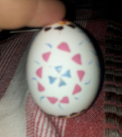
Ausgeblasene weiß Eier
Kaltfarben
3 verschiedene Stecknadeln (Metallkopf klein und Metallkopf
groß Glaskopf, als Griff kann man eine Klammer verwenden)
3 große Federn
Essig
Alte Tücher
Bleistift
Schablonen (z.B. zum Zeichnen von Kreisen usw.)
Duftöllampe für Teelichter
Bienen- und Kerzenwachs (Stearin)
Als erstes solltet ihr euch die Utensilien zu Recht legen. Bei
den Eiern ist darauf zu achten, dass sie eine dicke Schale haben,
schön glatt sind und keine Risse oder Erhebungen aufweisen. Als
nächstes nehmt ihr euch die Gänsefedern vor, ihr müsst nun die
Federchen vom Schaft entfernen, ohne dabei die Spitze abzubrechen. Die
Spitze wird nun bearbeitet, bei der ersten Feder schneidet ihr ein
„∨“ rein, dadurch erhaltet ihr ein offenes Dreieck, in die zweite
Feder kommt ein „–“ und ihr erhaltet ein Dreieck. In die letzte Feder
schneidet ihr ein „∧“ und dies ergibt ein Viereck. Nun kümmert ihr
euch um das Wachs, hier könnt ihr gerne Kerzenreste in allen möglichen
Farben verwenden, auf die Mischung kommt es aber an. Das Gemisch
sollte etwa aus 2/3 Bienenwachs und 1/3 Stearin bestehen. Der Docht
sollte nicht mit zum Auflösen gegeben werden. Das Wachs löst ihr in
der Duftöllampe auf.
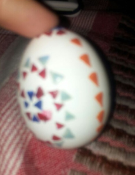
Nun sind die Eier dran, ihr nehmt euch ein Tuch und weicht es
mit Essig ein. Nun wird das Ei gründlich gereinigt, der Essig reinigt
das Ei und entfernt auch den roten Stempel. Wenn die Eier dann trocken
sind, teilt ihr jedes Ei mit dem Bleistift der Länge nach in Viertel.
Das heiße Ei wird der Länge nach und der Breite nach geteilt. Es
sollten aber ganz dünne Linien sein, damit sie später nicht mehr
gesehen werden. Hier könnt ihr euch ein Gummiband zur Hilfe nehmen.
Danach könnt euch ein Muster überlegen, welches ihr auf das Ei
übertragt, dazu könnt ihr alle beliebigen Schablonen verwenden. Als
nächstes zündet ihr das Teelicht an, welches unter dem Wachs platziert
wird und lasst das Wachs schmelzen. Wenn das Wachs leicht qualmt dann
ist es heiß genug, bei zu viel Qualm sollte die Wärmezufuhr erst
einmal unterbrochen werden. Bitte lasst nie das Feuer unbeaufsichtigt
und lasst euch hier eventuell von euren Eltern helfen. Nun taucht ihr
die Feder in das Wachs, diese sollte aber nur kurz eingetaucht werden,
lasst ihr sie zu lange im Wachs geht sie kaputt, lasst ihr sie zu
lange auf dem Ei, so kann diese dort festkleben und die Feder oder das
Ei beschädigen. Nun könnt ihr auf einem Probeei ausprobieren, welche
Muster jede Feder oder jede Stecknadel macht. Mit der Stecknadel könnt
ihr Linien ziehen oder Punkte setzen. Solltet ihr mit den Mustern
zufrieden sein, könnt ihr euch euer erstes Ei vornehmen, Nun könnt ihr
um jeden Kreis z.B. Dreiecke setzen. Alles was ihr mit Wachs bedeckt
bleibt später beim Einfärben weiß Seid ihr damit fertig, legt ihr euer
Ei in eine schöne Farbe (Kaltfarbe) und wartet, bis es für euch die
richtige Färbung hat. Dies kann bis zu 5 min dauern, kommt auf die
Farbintensität an. Nun nehmt ihr das Ei aus der Farbe und tupft es mit
einem weichen Tuch vorsichtig trocken. Nun braucht das Ei etwas Ruhe
zum trocknen, in dieser Zeit könnt ihr euch ein weiteres Ei vornehmen
und nach eurem Belieben gestalten. Ihr könnt müsst nicht unbedingt nur
weißes Wachs nehmen, sondern könnt euch jede beliebige Farbe nehmen.
Für jede Farbe benötigt ihr aber auch wieder eine öllampe. Auch müsst
ihr die Eier nicht unbedingt einfärben und könnt sie einfach weiß
lassen. Bei den sorbischen Eiern könnt ihr eurer Fantasie freien Lauf
lassen. Es gibt viele verschiedene Variationen dieser wunderschönen
Ostereier.
Mit dem Karsamstag endet die heilige Karwoche (von
althochdeutsch kara=Klage, Kummer, Trauer), die Woche unmittelbar vor
Ostern. Am Karsamstag wird der Tod Jesu Christi betrauert, der am Tag
zuvor gestorben ist und beerdigt wurde, da der Samstag in der
jüdischen Tradition ein Feiertag ist, an dem nicht gearbeitet werden
darf.
Im christlichen Glauben wird gelehrt, dass Jesu am Tag nach
seinem Tode (also an dem sog. Karsamstag) in die Hölle bzw. die
Vorhölle hinabgefahren ist und dort die gerechten Seelen erlöst hat.
Der Karsamstag ist ein stiller Kirchentag. Er ist kein
arbeitsfreier Feiertag. Die Glocken in den Kirchen erklingen nicht. Zu
den am Karsamstag stattfindenden Gottesdiensten sind die Kirchen nicht
geschmückt. Auf dem Altar liegen keine Tücher und es stehen weder
Blumen noch Kerzen darauf. Auch auf die Heilige Kommunion oder das
Abendmahl wird verzichtet, da dies als Freudenfeier in der
katholischen Kirche angesehen wird.
Der Karsamstag dient traditionell dazu, die Feiern am
Ostersonntag vorzubereiten. Es werden die Eier bemalt, gebastelt,
gebacken und sonstige Vorbereitungen zum Osterfest getroffen, welches
am Tag darauf stattfinden soll. Darüber hinaus gibt es noch diverse
lokale Bräuche, die ich hier auszugsweise erläutern möchte.
Eine Tradition ist es, dass die Kinder am Karsamstag in die
Kirche zum Beichten gehen. Um ihnen diesen Gang zu versüßen, gibt es
mancherorts die sogenannten Beichtwaffeln, die von den Müttern
gebacken werden und die die Kinder nach erfolgter Beichte essen
dürfen.
Der wohl verbreitetste Brauch am Karsamstag ist das Osterfeuer.
Hierbei gibt es verschiedene Auslegungen. Im Brauchtum der Kirche
versinnbildlicht das Feuer das Licht Jesu Christi, der die Menschen
vom Tod wieder in das Leben zurückführt. Das kirchliche Osterfeuer
wird vom Priester vor der Kirche am Morgen des Karsamstags gesegnet.
In der Osternacht dann wird daran eine Kerze angezündet und mit ihr
das Licht in die dunkle Kirche getragen. Eine andere Ansicht des
Osterfeuers ist die, dass mit dem Feuer der Winter beziehungsweise die
Teufel des Winters vertrieben werden sollen (sehr verbreitet z.B. in
Norddeutschland). In vielen, vor allem ländlichen Gemeinden wird das
Abbrennen des Osterfeuers immer als großes Fest gefeiert, bei dem
gegrillt wird und es entbrennt ein Wettstreit zwischen den
Nachbargemeinden, wer denn nun das größte Feuer entfachen wird. In
diesem Zusammenhang wird auch oft für wohltätige Zwecke gespendet.
In einigen Gegenden Sueddeutschlands, vor allem im fränkischen Raum,
gibt es noch den Brauch des Ratschens. Da es sich beim Karsamstag um
einen stillen Tag handelt, erklingen die Glocken der Kirchen nicht. Um
die Bewohner der Gemeinden trotzdem auf den Gottesdienst vorzubereiten
(früher gab es ja keine Uhren oder Wecker), gehen die Kinder (meistens
die Ministranten der Gemeinde, deshalb waren es früher nur Jungen und
erst in der neueren Zeit sind es auch Mädchen) der Gemeinden zu
bestimmten Zeiten von Haus zu Haus mit den sogenannten Ratschen
(Lärminstrumente). Es ist von Ort zu Ort unterschiedlich, wie oft und
zu welchen Zeiten dies geschieht. Am verbreitetsten ist der Brauch, um
06.00 Uhr, 11.00 Uhr, 12.00 Uhr und 18.00 Uhr mit den Ratschen durch
die Dörfer zu gehen. Am Nachmittag des Karsamstags sammeln die
Ratschenkinder dann ihren Lohn ein, dafür dass sie den ganzen Tag die
Ratschen geschwungen haben. Diesen Lohn erhalten sie entweder in Form
von Süßigkeiten oder Eiern oder auch in
Geld, das dann in die Ministrantenkasse fließt oder wie am
Dreikönigstag für wohltätige Zwecke gespendet wird.
Es war ein sonniger Morgen als Lora und ihre Freundinnen von
diesem unerträglichen Wecker geweckt wurden. Heute wollten sie früher
aufstehen, weil sie nochmals für die Osterprüfung in Zauberkunst üben
wollten. Sie wussten nicht genau, was drankommen würde, aber sie
kannten Professor Flitwick und wussten, es würde nichts allzu schweres
werden. Doch sie übten nochmals die Farb- und Schrumpf-
beziehungsweise Wachstumszauber und all die anderen Beschwörungen. Sie
konnten das alles ziemlich gut, nur Lora hatte noch Schwierigkeiten
mit dem Laufzauber.
Danach gingen sie in die große Halle hinunter und verschlangen
ihr Frühstück. Um 8 Uhr sollte ihre Prüfung stattfinden, sie waren
trotz guter übung ein wenig nervös. Katrin sagte nochmals alle
Beschwörungsformeln auf und Lora korrigierte sie wenn nötig:
“Farbwechselzauber?“, fragte Lora. „Colorus“ antwortete Katrin.
„Richtig, kannst du mich auch nochmal abfragen? Du kannst das alles!“
fragte Lora. „Muss das sein? Ich bin sicher Flitwick kommt gleich. Das
bringt nichts mehr.“ Lora zog einen Flunsch.
In diesem Moment kam der kleine Professor Flitwick um die Ecke.
„So ich werde euch Einzeln in das Zimmer rufen und euch Prüfen. Es hat
keinen Zweck, diejenigen, die schon fertig sind zu fragen, was gefragt
wird. Jeder wird andere Aufgaben bekommen, aber ich bin überzeugt ihr
werdet das schaffen. Als erstes: Lora Ambers!“
Lora ging mit leicht erhöhtem Puls in das Zimmer und sagte sich im
Stillen: „Du schaffst das Lora, du schaffst das!“ Flitwick musste
bemerkt haben, dass sie nervös war und sagte. „Keine Panik, Sie sind
eine meiner besten Schülerinnen! Und nun: eine österliche Aufgabe!
Lassen sie doch diese Ostereier hier ein paar Runden um den Tisch
laufen!“ Dieser Zauber fiel Lora jetzt leicht, denn sie hatte ihn
zuvor nochmals geübt. „Bravo“, meinte Flitwick „und nun färben Sie die
Eier bitte anders, so wie sie möchten. Hauptsache bunt und anders“ und
dabei huschte ihm ein Lächeln über sein kleines Gesicht. Auch diese
Aufgabe meisterte Lora, ihr Ei war pink mir glitzernd-türkisen
Punkten.
Flitwick strahlte „Gut gemacht Lora!“ lobte er sie. „Sie können
gleich gehen, aber vorher lassen Sie das Ei bitte noch wachsen!“ Lora
freute sich. Auch diesen Zauber konnte sie. Sie tippte das Ei an und
sagte „Magnus!“ und das Ei schwoll auf die Größe eines Quaffels an.
„Sehr gut, sie können gehen und das Ei mitnehmen. Es ist aus
Schokolade! Schöne Ostern!“ sagte Flitwick fröhlich. „Danke, Ihnen
auch Professor“ meinte Lora.
Glücklich ging sie aus dem Zimmer. Sie brach ihr Ei auf und aß
den ersten Schokoladensplitter. Innen war ein Zettel auf dem stand:
„Der kürzeste Weg zwischen zwei Menschen ist ein Lächeln. Chinesisches
Sprichwort“ Mit einem stillen Lächeln ging sie in den
Gemeinschaftsraum und wartete auf ihre Freundinnen um Ostern zu
feiern.
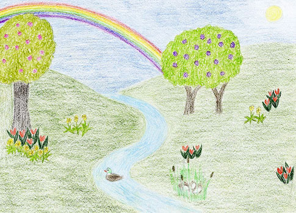
Nach der langen Winterzeit wächst alles schön weit und breit.
Wenn die ersten Blumen blüh’n, gibt es noch viel mehr zu
seh’n: Schnecken, Käfer und Getier krabbeln munter
durchs Revier.
Und dann kommt der Osterhase versteckt etwas im hohen Grase:
Bunte Eier, leck’re Sachen, die uns Kinder Freude machen!
Ja, du beschenkst uns jedes Jahr, wir danken dir, das ist
doch klar!
Dieses Jahr ist etwas neu, hab nur keine große Scheu.
Du bekommst ein Osternest, sollst dich freuen an diesem
Fest: Ein Bund Möhr‘n allein
für dich, weil du immer denkst an mich!
„Peeves!!! Auf der Stelle in mein Büro!!!“ Die Stimme von Professor
McGonagall schallte durch die Gänge von Hogwarts und das Echo war bis
weit in den verbotenen Wald zu hören. Peeves, gerade damit beschäftigt
dem neuen Lehrer für Zaubertränke einen Streich zu spielen, ließ
erschrocken das Reagenzglas mit den Blutegeln fallen. Fieberhaft
begann er zu überlegen, welche seiner Taten die Schulleiterin von
Hogwarts so in Rage gebracht hat. Gut, die Erstklässler mit heißem
Kerzenwachs zu überschütten war sicherlich nicht ganz richtig gewesen.
Auch das Stibitzen des Kronleuchters aus der Großen Halle war nicht
richtig gewesen. Aber was es auch sein mochte. Je näher Peeves dem
Büro der Schulleiterin kam, desto langsamer wurde er. Bevor er die Tür
öffnen konnte schwang diese auf und er sah sich dem wutschnaubendem
Gesicht von Professor McGonagall gegenüber. „Schön, dass Sie es heute
noch geschafft haben, Peeves.“ Ihre Stimme war eisig. „ Wie Sie sich
sicherlich denken können, habe ich ein Hühnchen mit Ihnen zu rupfen.“
Mit großen Schritten war sie durch den Raum geschritten und hatte sich
auf den Schulleiterstuhl gesetzt. Peeves nahm auf der anderen Seite
des Tisches auf einem unbequemen Holzstuhl Platz. „Ich hätte da so
einiges, über das ich mit Ihnen reden müsste. Aber die Nachricht, die
mich heute per Eule erreicht hat, erduldet keinen Aufschub. Sie rollte
ein Pergament auf dem Tisch auf. Die Schrift war klein und
unleserlich: „ Der Osterhase hat geschrieben, dass er von einer
unbekannten Person für über eine Woche fest gehalten und gequält
wurde. Anbei ist eine Skizze des Tatverdächtigen.“ Sie schob Peeves
ein weiteres Pergament zu. Es war ein fast genaues Abbild seiner
selbst.
„Ich kann mir nicht vorstellen, dass sie für die Entführung des
Osterhasen verantwortlich sind. Allerdings haben alle magischen
Schulen, Behörden und Einrichtungen eine Kopie dieses Briefes und des
Bildes bekommen. Der Zaubereiminister bittet dringend um die
Aufklärung dieses Vorfalls. Ansonsten droht der Osterhase damit, seine
Arbeit an Ostern ruhen zu lassen. Und nicht nur für diesen Tag,
sondern bis sich der Verantwortliche gefunden hat. Mein Wort gegen das
des Osterhasen hat leider keine große Kraft. Ich gebe Ihnen eine
Woche, um diesen Vorfall zu klären. Ansonsten droht ihnen die
lebenslange Haft in Askaban.“ Peeves war ganz weiß geworden. „Ich… ich
weiß wirklich nicht, was das zu bedeuten hat. Wie soll ich das denn
herausfinden?“, stotterte er. „Das ist Ihnen überlassen. Allerdings
sollten Sie herausfinden, ob es irgendjemand in dieser Schule nicht
gut mit Ihnen meint. Jemand, der mindestens in die fünfte Klasse geht.
Ein Drittklässler wäre wohl kaum in der Lage, den Osterhasen
aufzuspüren.“ Mit diesen Worten entließ Professor McGonagall Peeves.
Peeves schlurfte mit gesenktem Kopf den Flur entlang bis zum
Mädchen Klo im zweiten Stock. Er öffnete die Tür und blickte sich um:
„Myrthe, bist du da?“ Ein leises Kichern kam aus einem der Klos: „
Komm her mein kleiner. Ich habe schon auf dich gewartete.“ Myrthe
stieß dir Tür auf und schwebte auf Peeves zu: „Nanu? Was ist denn mit
dir los? Hat dir etwa jemand einen Streich gespielt.“ Mit ihrer Hand
strich sie über seine Wange. „Nein nein. Es ist bloß, ich brauch deine
Hilfe.“ Er erzählte ihr alles. „Und was willst du jetzt tun? Wie
willst du in einer Woche herausfinden, wer dir das Angetan hat?“,
fragend schaute Myrthe auf Peeves hinab, der nur noch ein kleines
Häuflein Elend war. „Ich hatte gedacht, dass du mir vielleicht helfen
könntest. Wir könnten einen Geisterrat abhalten und alle fragen, ob
sie in ihren Häusern oder auf den Fluren etwas in diese Richtung
gehört haben.“ Myrthe schüttelte den Kopf: „Ich weiß ja nicht. Wie
willst du die anderen überzeugen? Du hast mehr als die Hälfte durch
deine Streiche gegen dich aufgebracht.“ Kleinlaut hob Peeves seinen
Kopf: „Ich werde mich bei ihnen Entschuldigen.“ „Du willst was?“
Myrthe bekam einen Lachanfall. „Du hast dich noch nie in deinem Leben
als Poltergeist bei irgendwem entschuldigt. Du glaubst doch nicht,
dass die anderen Geister dich ernst nehmen werden.“ „Bitte Myrthe, das
ist meine einzige Chance.“, bettelte Peeves. „Na gut. Aber nur unter
einer Bedingung. Wenn das alles hier vorbei ist, fährst du mit mir in
die Karibik!“ Diese Worte zauberten ein Lächeln auf das traurige
Gesicht von Peeves. Er hob seine Hand und gab Myrthe einen Kuss.
„Ruhe!!“ Myrthe schwebte aufgeregt zwischen den Geistern hin und
her. „Ruhe!“ An die hundert Geister hatten sich in einem der Kerker
eingefunden und warteten nun gespannt darauf, was passieren würde.
Keiner wusste genau worum es bei diesem Treffen gehen würde, deshalb
diskutiere der Großteil erst mal alle möglichen Ereignisse durch.
Peeves kam zu Myrthe auf die Bühne. Als die Geister nach einander
bemerkten, dass ein Poltergeist unter ihnen war, wurden sie still.
Peeves räusperte sich: „Ich weiß, einige von euch werden sich fragen,
was einer wie ich auf einem Geisterrat zu suchen hat.“ Er machte eine
kurze Paus und blickte in viele unverständliche Gesichter. „Ich möchte
mich für meine Streiche, die ich vielen von euch gespielt habe,
entschuldigen. Ich bin ein Poltergeist, es ist meine Aufgabe, Chaos zu
stiften. Aber ich weiß, dass ich manchmal über die Stränge geschlagen
bin. Es tut mir leid.“ Ein erstauntes Murmeln ging durch die
Versammlung. Einer der Geister hob seinen Arm: „Peeves, wir wissen,
dass du manchmal nicht ganz richtig im Kopf bist. Was bezweckst du mit
dieser Entschuldigung? Ich sehe nicht ein, aus welchem Grund wir dir
verzeihen sollten.“ Der Geist, ein jüngerer Pirat ließ seine Hand
wieder sinken. Peeves zuckte zusammen. Er wusste, dass er jetzt auf
jedes Wort, das er sagen wollte, achten musste. Doch Myrthe war
schneller als er. „Das mit seiner Entschuldigung war meine Idee. Wir
brauchen eure Hilfe.“ Und bevor er sie stoppen konnte, erzählte sie
der versammelten Gesellschaft, was sich zugetragen hatte. „Ich hoffe
ihr seht ein, wieso ich es für angebracht hielt, dass er sich vorher
bei euch entschuldigt. Ihr müsst ihm nicht verzeihen, aber die
Tatsache, dass es einem Schüler aus dieser Schule möglich war, Peeves
so nach zu ahmen, dass er kurz davor steht in Askaban zu landen, finde
ich sehr beunruhigend. Ich weiß, niemand kann Peeves wirklich leiden.
Aber Hogwarts ohne Peeves ist wie ein Festmahl ohne Essen. Das geht
einfach nicht. Bitte. Ihr müsst sagen, wer den Osterhasen eventuell
entführt hat.“ Die Stille, die nach dieser Geschichte den Kerker
durchzog war lange. Niemand wagte ein Wort zu sagen, bis Sir Nicolas
seine Hand hob: „Peeves, ich verzeihe dir alle deine Streiche. Aber
bitte sag, wer einen solchen Groll auf dich hat, dass er dich in
Askaban sehen will. Zusätzlich kommt noch hinzu, dass mit dieser Tat
das Osterfest einen großen Schaden erleiden könnte.“ Einige der
Geister nickten, andere begannen mit ihrem Nachbar zu tuscheln. „Ich
weiß es nicht.“ Peeves schüttelte unglücklich den Kopf. „Seit gestern
bin ich meine ganzen Streiche durchgegangen, die ich in den letzten
sieben Jahren gespielt habe. Es müssen über hundert Leute sein, die in
Frage kommen.“Der fette Mönch schob sich durch die Reihen nach vorne:
„ Vor vier Wochen habe ich einige Jungen aus meinem Haus dabei
beobachtet, wie sie mehrere Mädchen dazu überredeten, ihnen zu zeigen,
wie man näht. Zwei waren ziemlich groß, der dritte war etwas kleiner
als du.“ Der blutige Baron schaute den Mönch an: „Bei mir war genau
dieselbe Situation. Was hat das denn jetzt zu bedeuten?“ „Das wir ganz
dringend mit diesen Leuten reden müssen. Peeves, wie spät ist es?“
Myrthe hört sich an wie ein Militärofizier. „Gleich acht, wieso?“ Wir
teilen Gruppen ein. Die Hälfte sucht die drei Jungs aus Hufflepuff,
die andere Hälfte die aus Slytherin. Und dann wissen wir in ein paar
Minuten, was das soll.“
„Seit leise oder euch passiert was!“, fauchte Peeves dir drei
Jungen aus Hufflepuff an. Im Verließ trafen sie auf die anderen
Geister, die die jungen aus Slytherin fest hielten. Der blutige Baron
schwebte zwischen den sechs Stühlen auf und ab. Mit seiner
unheimlichen Stimme fragte er die Jungen: „Ich will jetzt auf der
Stelle wissen, was es mit dieser Osterhasenentführung auf sich hat.
Wart ihr das?“ Der kleinste der sechs fing an zu zittern: „ Wir… es
war nur ein Scherz. Peeves hat uns immer Streiche gespielt, da wollten
wir ihm auch einen Spielen…“ „Halt die Klappe Marius!!! Das geht
diesen Baron einen schieß Dreck an.“, schrie der eine Hufflepuffjunge.
„Nein. Es war falsch was wir getan haben! Peeves, er hat uns immer
Streiche gespielt. Wir dachten, es wäre ganz lustig, ihm zu zeigen,
wie das so ist, wenn man wegen Sachen, die man nicht getan hat, was
auf die Rübe bekommt. Sebastian kam auf die Idee den Osterhasen um
Hilfe zu bitten. Sein Vater arbeitet in der Briefbehörde auf den
Osterinseln und hatte ihm erzählt, dass der Osterhase eigentlich die
Stelle von Peeves haben wollte und sich seit dem immer an ihm rächen
wollte.“ Peeves wurde bei diesen Worten rot wie eine Tomate: „Ihr habt
was?“, schrie er. „ Der Osterhase ist ein gemeines Miststück. Als wir
mit der Schule fertig waren, gab es nur diese beiden Stellen. Entweder
Schokoeier verteilen oder Schüler ärgern. Wir waren uns von Anfang an
einig, wer welche Stelle bekommt. Erst zwei Wochen später hat er mir
gesagt, dass er lieber ein Polterhase wäre. Aber da war es schon zu
spät. Die Schulverwaltung wollte meinen Antrag nicht mehr annehmen und
so ist er einfach auf seine Inseln verschwunden.“ Peeves fing an zu
heulen. „Er war mein bester Freund. Ich verstehe nicht, wie er mir das
antun konnte.“, schluchzte er. Myrthe legte ihre Hand auf seine
Schulter. „Wie habt ihr den Hasen entführt?“, fragte sie den Jungen.
„Wir haben ihn nicht entführt. Er ist freiwillig mit uns gegangen. Wir
hatten uns nur verkleidet um den anderen Leuten etwas vorzugaukeln. Es
tut mir wirklich leid Peeves.“ Die Tränen liefen dem Jungen übers
Gesicht. „Der Osterhase. Er ist noch hier im Schloss. Seit gestern ist
er wieder im Schloss um sich bei dir zu entschuldigen, um dich zu
warnen.“ Entgeistert schaute Peeves den Jungen an. Der Osterhase
wollte sich bei ihm entschuldigen? Dabei war er doch Schuld an der
ganzen Sache, oder doch nicht? Da klopfte es zaghaft an der Kerkertür
und ein großer Hase hüpfte in den Raum. „Peeves, es tut mir leid. Ich
wollte nur… früher wollte ich immer ein Polterhase werden. Und dann
kamen diese Jungen und schlugen mir vor, dir einen Streich zu spielen.
Viel zu spät merkte ich, wie viel Spaß mir mein Beruf eigentlich
macht. Ich habe einen Vorschlag für dich.“ Er holte tief Luft: „Wenn
du möchtest kannst du mir dieses Jahr bei den Vorbereitungen für das
Osterfest helfen. Und dann auch beim Verstecken der Schokoeier.“ Der
Osterhase schaute Peeves bittend an. Peeves drehte sich zu Myrthe um.
„Ok. Aber nur, wenn du mir dann beim Poltern hier in der Schule
hilfst.“ Er lachte sie an und viel dem Osterhasen um den Hals: „Das
ist das schönste Ostergeschenk, das ich je bekommen habe.“, schluchzte
er. „Glaubst du, du kannst mich und Myrthe mit nehmen und uns in der
Karibik absetzen?“ flüsterte Peeves dem Osterhasen ins Ohr. Der
Osterhase schielte rüber zu dem Geistermädchen mit der großen
Nickelbrille: „Wenn du willst, können wir euch auch bis ans Ende der
Welt bringen.“
Zwei Wochen später am Osterfest schlüpften Peeves und der
Osterhase in das letzte Haus, das noch keine Ostergeschenke bekommen
hatte. Sie erzählten sich leise Geschichten über die vergangene Zeit
und versteckten die Ostereier gemeinsam. Nach Ostern ging in Hogwarts
dann die Post ab. Ein Poltergeist und ein Polterhase ließen das ganz
normale Chaos in Hogwarts zu einem Orkan der Streiche werden. Zum
Sommer hin wurde es ruhig. Ungewöhnlich ruhig. Peeves war mit Myrthe
in die Karibik gefahren.
Es war eine klare Nacht, Sterne spiegelten sich im See vor dem
Schloss. Kein Lufthauch wehte, kaum ein Laut durchdrang die stille,
friedliche Nacht. Ganz vereinzelt waren flackernde Lichter hinter den
Fenstern des Schlosses zu sehen, bedeutend weniger als sonst. Es waren
Osterferien, und kaum ein Schüler war in Hogwarts geblieben.
Diejenigen, die sich fürs Bleiben entschieden hatten, zwei Hufflepuffs
des dritten und zwei Ravenclaws des fünften Jahrgangs, befanden sich
nun längst in ihren jeweiligen Schlafsälen. Es war also mehr Routine
als wirklicher Bedarf, als der Fette Mönch wie gewohnt durch die Gänge
patrouillierte. Es war Karsamstag, eigentlich schon die Osternacht,
auch wenn die Zauberer dem heutzutage nicht mehr viel Achtung zollten.
Selbst zu seiner Zeit war das kaum der Fall gewesen, er war damals mit
seiner Entscheidung, sich dem Orden anzuschließen, gemeinhin auf
Unverständnis gestoßen. Der Mönch schwebte um eine Ecke. Etwas bewegte
sich, aber gleich erkannte er Mrs. Norris, die durch die Gänge
streifte. Kein Grund zur Besorgnis. Die anwesenden Schüler würden
keine Probleme machen. Es war erstaunlich, dass überhaupt Schüler
geblieben waren. Innerhalb des letzten Jahrzehnts war die Zahl derer,
die über die Ferien nicht in den Kreis der Familie zurückkehrten,
rapide gesunken. Eltern wollten in diesen schwierigen Zeiten ihre
Kinder bei sich wissen, Familien wollten vereint sein. Zu groß war die
Gefahr, dass sie gewaltsam auseinander gerissen wurden, dass von einem
auf den anderen Tag ein Familienmitglied den immer häufiger
stattfindenden Todesserüberfällen zum Opfer fiel. Namen kamen ihm in
den Sinn, Namen von Zauberern und Hexen, die er selbst in ihrer
Schulzeit kennengelernt hatte. Als lebendiger Mönch hatte er am
liebsten Heilzauber gesprochen. Das war seine Art, Gutes zu tun und zu
helfen. Lange wusste keiner seiner Mitbrüder von seinen Fähigkeiten,
keiner konnte es ihm gleich tun, aber ihm war es immer nur darauf
angekommen, Menschen zu helfen. In der ersten Zeit nach seinem Tod war
es sehr schwierig gewesen, damit klarzukommen, keine Heilmagie mehr
anwenden zu können. Gerade dieser Tage wäre es gut, den Lehrern und
Schülern beizustehen, zu helfen, Arbeit abzunehmen. Ihre Körper heilen
zu können. Stattdessen heilte er Geist und Seele, weil es einer der
wenigen Wege für ihn in seiner jetzigen Form war, Gutes zu tun. Der
Mönch schwebte durch die Wände eines Klassenzimmers in einen anderen
Korridor. Es war Ostern, die Auferstehung des Herrn. Niemals hatten
die Menschen Hoffnung mehr gebraucht als jetzt, wo Familien
auseinandergerissen und Unschuldige getötet wurden. Hoffnung auf
Zusammenfinden im Jenseits, Hoffnung darauf, dass es den Liebsten gut
gehen würde, Hoffnung auf die Gnade Gottes. Das war es, was Menschen
weiterkämpfen ließ, was sie dazu brachte, sich gegen die
Ungeheuerlichkeiten Voldemorts aufzulehnen. Umso trauriger, dass die
meisten Zauberer Ostern nurnoch mit bunt bemalten Eiern Ferien in
Verbindung brachten.
„Pater noster, qui es in caelis“, begann der Mönch leise, als
er, die Hände zum Gebet gefaltet, durch die Gänge schwebte,
„sanctificetur nomen Tuum.“ Die Worte kamen ihm wie von selbst über
die Lippen. Den nächsten Vers betonte er mit besonderer Inbrunst:
„adveniat regnum Tuum“ Bitte, lass dein Reich kommen. Hilf uns, mit
diesem Wahnsinn ein Ende zu machen, mit diesem …Menschen, der dich in
all seinem Tun verspottet. All die liebenden Eltern, die zu Waisen
gemachten Kinder… Aber ich will dich nicht infrage stellen: „fiat
voluntas Tua, sicut in caelo, et in terra.“, dein Wille geschehe, wie
im Himmel, so auf Erden. „Panem nostrum cotidianum da nobis hodie, et
dimitte nobis debita nostra“ All die Menschen, denen er nicht hatte
helfen können. All die Male, bei denen er versagt hatte, die Menschen
einander nahe zu bringen und zu versöhnen. „sicut et nos dimittimus
debitoribus nostris“ Zu leicht verfiel man der Falle, anderen wegen
Kleinigkeiten zu zürnen, niemand war davon ausgenommen. Mit aller
Innigkeit fuhr er fort: „et ne nos inducas in tentationem, sed libera
nos a Malo.“ Bewahre uns davor, Herr, dem Bösen zu verfallen, seinen
teuflischen Einflüsterungen, den dämonischen Verführungen. Hilf uns,
gegen das Böse und Dunkle anzukämpfen. Hilf uns, einander Nähe zu
geben, wenn wir es brauchen. Wir bedürfen deiner Hilfe, Herr, stehe
uns bei! „Amen.“
Der Mönch betete regelmäßig, aber nur selten war ihm mit solcher
Heftigkeit bewusst, wie sehr die Menschen gerade heutzutage auf Gottes
Beistand angewiesen waren. Die Liebe Gottes und die Liebe der Menschen
untereinander, das war die stärkste Waffe, die sie gegen die Dunklen
Kräfte hatten, auch wenn diese Liebe ihre verwundbarste Stelle war.
Familien wurden auseinandergerissen. Gute Menschen getötet. Es war der
Tag der Auferstehung des Herrn. Es gab Hoffnung.
Tief in sich versunken schwebte der Mönch durch die Korridore des
siebten Stockwerkes, als er ein Schluchzen hörte. Das schimmernde
Licht, das der Geist immer ausstrahlte, machte eine Gestalt sichtbar,
die zusammengekauert an der Wand des engen Korridors saß. Jemand war
unglücklich. Der Mönch schwebte vorsichtig neben der Person – eine
Schülerin, wie es schien – in eine kniende Position. Die Schülerin
blickte auf, der Mönch sah in verweinte Augen. Es war eine der beiden
Ravenclaws. 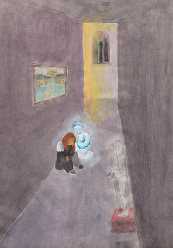
Der Fette Mönch bemühte sich, seiner Stimme einen sanften Klang
zu geben. „Willst du nicht in den Räumlichkeiten deines Hauses sein?“
Sie schüttelte den Kopf. „Kann nicht“, brachte sie unter weiteren
Schluchzern hervor. Der Mönch legte ihr einen Arm um die Schultern,
auch wenn es sehr warm war. Er hatte festgestellt, dass Menschen in
manchen Situationen den kalten Trost eines Geistes gar keinem
vorzogen. „Willst du mir sagen, was los ist?“ Eine Weile lang war sie
nur ruhig, dann fragte sie: „Was passiert mit Menschen, wenn sie
sterben?“ Der Mönch antwortete: „Ihr Geist und ihre Seele kommen an
einen anderen Ort, den manche ‚Himmel‘, manche ‚Paradies‘, andere
einfach nur ‚Jenseits‘ nennen.“ „Wohin kommen sie wirklich, und wo ist
dieser Ort?“ „In unserer Welt kennen wir drei Dimensionen“, sagte der
Mönch leise, „aber die Welt ‚da drüben‘ ist sozusagen wie eine vierte
Dimension. Meistens können wir sie nicht wahrnehmen, weil wir zu sehr
auf unsere drei Dimensionen fixiert sind. Besonders sensible Menschen
spüren manchmal, wenn ihnen jemand von ‚dort drüben‘ nahe ist, wenn
dieser an ihn denkt. Daher, unter anderem, können wir uns recht sicher
sein, dass es wirklich so ist. Dumbledore sagt immer, dass für den gut
vorbereiteten Geist der Tod nur das nächstgrößere Abenteuer ist, und
dass man nicht um die trauern soll, die weiter in die andere Welt
gegangen sind, sondern um die, die hierbleiben.“ „Dann ist der Tod
nicht schlimm?“, fragte das Mädchen, und schluchzte wieder. „Nein“,
antwortete der Mönch sanft, „wenn man tot ist, ist das nicht schlimm.“
Das Mädchen seufzte, und entspannte sich ein bisschen. „Gut.“ Eine
Weile lang waren sie still, doch der Mönch meinte, wieder leises
Weinen zu hören. „Soll ich dir mal eine Geschichte erzählen?“, fragte
er. Das Mädchen zuckte erst mit den Schultern, nickte dann aber. „Es
ist schon lange her, beinahe zweitausend Jahre. Da war in –“ „Ach, du
meinst Jesus?“, unterbrach ihn die Schülerin. Der Mönch war erstaunt,
es war lange her, dass er einen Zauberer oder eine Hexe getroffen
hatte, der damit etwas am Hut hatte. „Ja. Woher kennst du – ?“ Das
Mädchen ließ den Kopf auf ihre Hände sinken. „Mein Vater war
Pfarrer.“, sagte sie und klang traurig. „War?“, fragte der Mönch
leise. Das Mädchen nickte. „Und meine Mutter Hexe. Todesser haben sie
umgebracht.“ Der Mönch schwieg. Fast zehn Jahre war es her, dass Lord
Voldemort unter diesem Namen auf der Bildfläche erschienen war. Er
hatte ihn als Schüler gekannt, diesen Tom Riddle, oder zumindest von
ihm gewusst. „Dann sind sie jetzt ‚dort drüben‘ und wachen über dich.
Sie sind bestimmt glücklich und dankbar, dass du in Hogwarts bist und
überlebt hast.“ „Ich hatte so wenig mit ihnen zu tun in den letzten
Jahren. Das ganze Jahr über war ich in Hogwarts, nur in den Ferien
nicht, und selbst da habe ich nur erzählt wie toll Hogwarts ist und
wie gerne ich dort bin. Sie hatten kaum mehr Zeit mit mir, es muss
ihnen vorgekommen sein, als wäre ich lieber hier als bei ihnen.“ Sie
klang vorwurfsvoll. „Und die ganze Zeit über haben sie dich geliebt.
Sie haben sich für dich gefreut, dass du in Hogwarts tolle Jahre
verbringst. Deine Mutter hat sich an ihre Hogwartszeit erinnert und
dir dein Glück gegönnt, dein Vater kannte ihre und deine Erzählungen.
Sie wollten, dass du glücklich bist, und es hat sie mit Freude
erfüllt, dass es dir hier so gut geht, und dass du hier so sicher
bist.“ „Wirklich?“ Der Mönch nickte. „Ja. Sie werden weiterhin über
dich wachen.“ Er machte eine kurze Pause. „Kindern erzählt man häufig,
dass die, die sterben, nach dem Tod zu Sternen am Himmel werden. Man
will ihnen damit sagen, dass diese Menschen nicht einfach fort sind,
dass es sie weiterhin gibt und dass sie über die Menschen auf der Erde
wachen. Ich weiß nicht, ob die Welt ‚dort drüben‘, die nächste Welt,
über uns am Firmament ist. Aber es ist eine schöne Vorstellung, und
wenn ich eines ganz sicher weiß: Deine Eltern hören jetzt nicht auf,
dich zu lieben und auf dich acht zu geben. Sie hören damit nie auf.“
„Danke“, flüsterte das Mädchen. „Ich konnte nicht zur Beerdigung
gehen. Den Muggeln hat man eine Gasvergiftung vorgetäuscht, und sie
wurden auf dem Kirchhof bestattet. Ich war nicht dabei.“ „Du bist in
Gedanken bei ihnen“, sagte der Mönch, „bestimmt merken sie das. Sie
wollen, dass du sicher bist. Dort zu sein, wäre nicht sicher gewesen.“
„Weißt du“, setzte er nochmal an, „selbst wenn du ganz traurig bist,
wenn alles ganz dunkel erscheint, selbst dann ist da irgendwo ein
kleines wärmendes Licht. Dieses Licht ist Liebe. Die Liebe deiner
Eltern, und die Gottes, die dich immer begleitet und für dich
leuchtet. Jetzt ist Ostern, der Tag, an dem Jesus auferstanden ist. Du
spürst das Licht in deinem Herzen, das dich immer daran erinnert.“ Die
Schülerin war eine Weile lang still, dann flüsterte sie: „Ja.“ Der
Mönch ließ ihr noch einen Moment Pause, dann fragte er sanft: „Wollen
wir wieder zu deinem Gemeinschaftsraum zurückgehen?“ Das Mädchen stand
auf und straffte ihre Haltung. Mit fester Stimme sagte sie: „Ich bin
bereit.“ Der Mönch schwebte ebenfalls in eine stehende Position und
lächelte, die Hand auf ihrer Schulter. „Denk immer daran: Das Licht
leuchtet für dich.“ Sie lächelte vorsichtig zurück, und die beiden
gingen los. Das Mädchen flüsterte: „Ich spüre es!“ und der Mönch
spürte es auch, sah das helle, warme Licht, das in ihrem Herzen
leuchtete, und sein silbrig-weißer Geisterschein leuchtete gleich um
eine Spur heller. Es war Ostern, der Tag der Auferstehung des Herrn.
Auch, wenn die dunklen Mächte in dieser Welt ihre Spuren hinterließen,
auch, wenn es draußen dunkel war: Es musste Hoffnung geben. Es gab
Hoffnung, und die neugewonnene Kraft dieses Mädchens war der lebende
Beweis dafür.
Der kleine Osterhase Erik darf dieses
Jahr zum ersten Mal beim großen Ostertreiben mithelfen. Am
Karsamstagabend packt er genau wie sein Vater und all die anderen
fleißigen Hasen seinen Korb mit den leckeren und bunten Eiern. Zum
fünften Mal kontrolliert er den Tragekorb auf Löcher und testet die
Riemen auf Festigkeit. Er hätte es gern noch ein sechstes Mal gemacht,
aber der Vater hat ihn lachend ins Bett geschickt. Dort liegt nun der
kleine Erik und macht sich große Gedanken über den morgigen Tag. Wird
alles gut gehen? Wird er alles richtig machen? Doch eh er sich
versieht, schläft er ein.
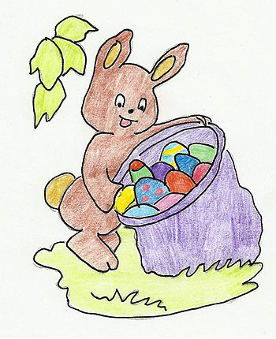
Früh ist es und die Wiesen sind noch taunass. Erik stapft munter
Richtung Wald. Stolz trägt er den schweren Korb und auch so sicher,
als ob er noch nie etwas anderes gemacht hätte. Im Wald singt er ein
kleines Frühlingslied beim Laufen, rennt mit einem Schmetterling um
die Wette und beobachtet einen Specht beim Hämmern. Dann fällt ihm
auf, dass er die Bäume, die er gerade sieht, gar nicht kennt. Müsste
er nicht schon längst die Lichtung erreicht haben? Oh nein, er hat
sich verlaufen. Aber macht nichts, beruhigt sich Erik, er hat ja eine
Karte. Vorsichtig stellt er den Korb ab und öffnet seine kleine
Notfalltasche. Doch – oh je – die Karte fehlt! Dabei hatte er sie doch
extra nochmal angeschaut und dann neben die Tür auf die Kommode
gelegt. Und vergessen. Betrübt lässt Erik seine Ohren hängen. Was soll
er nun machen? Er nimmt den Korb auf den Rücken und läuft langsam
weiter. Ihm ist sehr, sehr unbehaglich zumute. Nicht nur, dass er
keine Ahnung hat, wo er sich befindet, sondern bald werden auch einige
Kinder nicht vorhandene Eier suchen! Während er trübselig immer weiter
in den Wald läuft, kommt er an einer Höhle vorbei. Vielleicht ist sie
bewohnt? Vielleicht kann ihm jemand helfen? Leise schleicht er sich
hinein. Doch im Dunklen sehen seine Augen nicht so gut und so stolpert
er über einen kleinen Schemel, der im Weg steht. WUMPS! Ehe er sich
versieht, beugen sich drei schlecht gelaunte Bären über den kleinen
Osterhasen. Einer packt ihn am Nacken und stellt ihn grob auf die
Beine.
„Was störst du uns, du Eindringling?“ „Schnüffler!“, schimpft
ein anderer. „Frühstück?“, fragt der Dritte und leckt sich die Zähne.
Erik wird angst und bange. ängstlich reibt er sich seine langen
öhrchen, schließt die Augen und wartet auf ein Wunder. Dann hört er es
schmatzen. Zaghaft blinzelt er und sieht, dass die Bären es gar nicht
auf ihn sondern auf seinen Korb abgesehen haben! Laut schmatzend
sitzen sie auf ihrem Hosenboden und stopfen die Schokoladeneier nur so
in sich hinein. Das bunte Papier liegt achtlos zerstreut auf dem
Boden. Starr vor Schreck schaut Erik zu und endlich ist irgendwann der
Korb leer. Die Bären reiben sich zufrieden die Bäuche und grunzen
satt. „Danke. Das hat echt gut getan! Kannst uns öfter das Frühstück
bringen!“ Erik treten die Tränen in die Augen. „A-a-aber die Eier
w-w-waren doch für die Kinder…“ Betroffen schauen sich die Bären an.
„Das wussten wir nicht. Kleiner, das machen wir wieder gut. Wir lassen
uns was einfallen.“ Nach einer hitzigen Beratung ziehen die drei Bären
los. Natürlich nehmen sie Erik und seinen Korb mit. Sie traben eilig
durch den Wald bis sie an einen Fluss kommen. „Was habt ihr vor?“,
fragt Erik. „Wir fangen dir Fische!“ „Fische?“ „Du wirst sehen!“ Die
Bären treten an das Ufer und fangen an, sehr elegant und überaus
fleißig Fische zu fangen. Der Berg neben Erik wächst rasant und im Nu
ist der Korb übervoll. „Aber was soll ich denn mit Fischen? Die Kinder
warten doch auf bunte Eier!“ „Schau dir doch die Fische an. Sie sind
auch bunt. Und viel gesünder als Schokolade. Ich hab jedenfalls
Bauchschmerzen von den 53 Schokoeiern bekommen.“ Erik ist ratlos. Er
betrachtet die stolzen Bären und die vielen Fische. Tatsächlich, sie
glänzen in der Sonne in den verschiedensten Farben. Und es sind so
viele Formen… und eigentlich sind sie auch wirklich gesünder… hat er
überhaupt eine Wahl? Blitzschnell schnappt Erik sich seinen Korb und
hoppelt los. „Ja, ihr habt recht! Vielen Dank!“ „Hey, Kleiner, nicht
da lang. Du musst nach rechts und halt dich am Fluss, dann wirst du
dein Ziel nicht verfehlen.“
Wenig später staunten die Kinder nicht schlecht als sie ihre
Osternester suchten und statt Eiern und anderen Süßigkeiten
zusammengerollte Fische darin fanden. Diese wurden aber gleich
fröhlich am Osterfeuer am Spieß gebraten. Und seit diesem denkwürdigen
Ereignis legt Erik nun jedes Jahr in jedes Nest wenigstens einen
Osterfisch hinein.
Dies ist das Ende des Osterkalenders. Wir hoffen, die
vielfältigen Geschichten haben euch gefallen und die Rezepte und
Bastelideen haben euch inspiriert. Herzlichen Dank an alle
Mitwirkenden und schön habt ihr bis hierher gelesen :)